1. 프로젝트 개요
GovBiz는 정부지원사업 탐색부터 신청 준비까지 연결하는 AI 서비스입니다. 여러 기관에 흩어진 공고를 모아, 기업의 조건과 목적에 맞는 사업을 찾고 신청 준비와 진행 상황까지 관리할 수 있도록 돕습니다.
사용자 사용 흐름
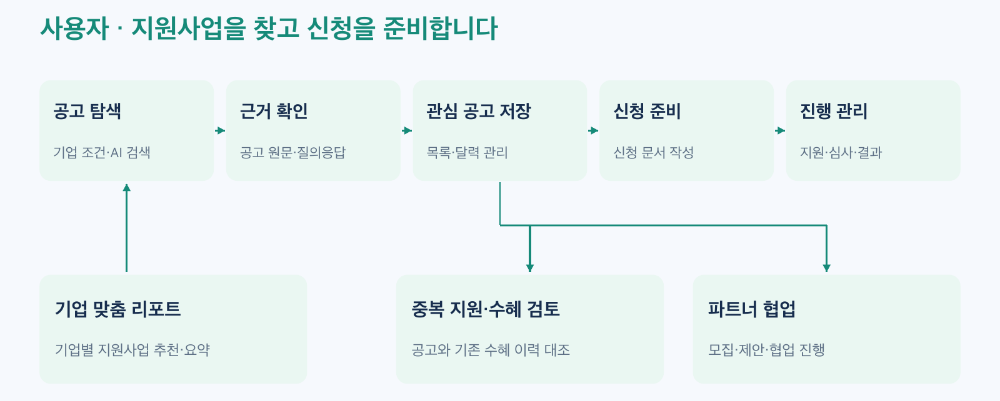
관리자 사용 흐름
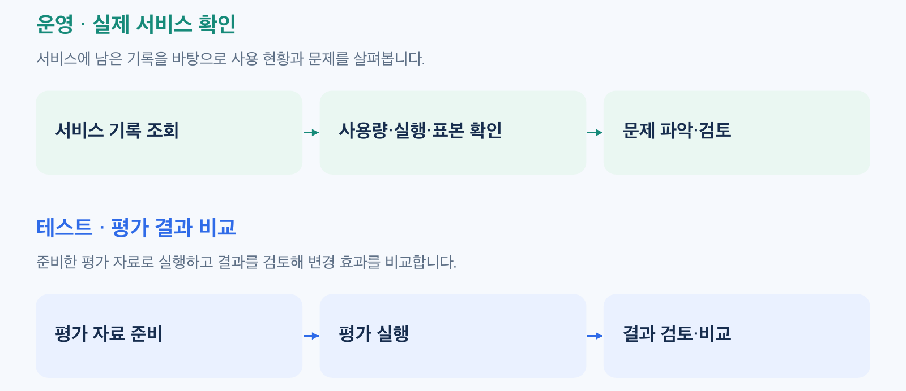
3차 기반과 4차 확장 범위
3차 프로젝트의 주요 기능을 유지하면서, 클라이언트와 품질 운영·배포 환경을 확장했습니다.
3차 프로젝트 링크 : AI Agent 를 활용한 정부지원사업 탐색·신청 관리 플랫폼
| 영역 | 3차 프로젝트 기반 | 4차 프로젝트 확장 |
|---|---|---|
| 서비스 | 공고 검색·근거 답변·신청 준비·중복 검토·협업 파트너 탐색 | LLM 기반 라우팅으로 사용자 요청을 기존 업무 기능에 연결 |
| 클라이언트 | 웹 중심 사용자 경험 | Expo 모바일 추가 · 웹·앱의 공통 계약과 로직 공유 |
| 품질 운영 | 검색·RAG 품질 평가 및 일부 실행 결과 보존 | 운영: 실행 추적·사용량·표본 검토 평가: 고정 자료 평가·모델 비교·사람 검토·품질 판정 실행 관리: Prefect 실행·예산·일정 관리 |
| 실행 환경 | EC2 + Docker Compose | Kubernetes(EKS) + EC2 노드 |
| 배포 반영 | SSM으로 EC2에 배포 명령을 전달하고, 기존 Compose 설정을 사용해 Core·AI 컨테이너를 새 이미지로 교체 | Argo CD가 Git의 배포 설정을 EKS에 자동 반영 |
| 자동 확장 | 자동 확장 구성 없음 | HPA(Pod) + Cluster Autoscaler(EC2) |
2. 시스템 아키텍처
아래 구조도는 접속 → 외부 통신 → 서비스·데이터 → 평가·관측 → 서버 배치·저장소 순서로 살펴봅니다. 세부 설정은 각 그림 아래에서 펼쳐 볼 수 있습니다.
접속 경로 — 웹·앱에서 백엔드까지
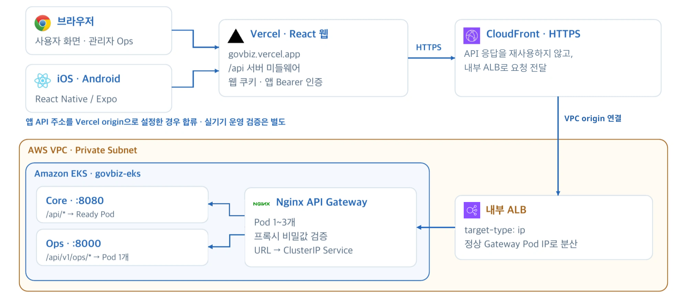
- 웹·앱 요청: 인증과 프록시를 거쳐 Gateway에 도착합니다.
- 서비스 연결: Gateway가 URL에 따라 Core·Ops 등 내부 서비스로 전달합니다.
접속·인증 설정 펼쳐 보기
| 구성 요소 | 세부 설정·역할 |
|---|---|
| 브라우저 | 사용자 화면 · 관리자 Ops |
| iOS · Android | React Native / Expo |
| Vercel · React 웹 | govbiz.vercel.app · /api 서버 미들웨어 · 웹 쿠키 · 앱 Bearer 인증 |
| CloudFront | API / Argo 경로: 캐시 끔 · VPC origin → 내부 ALB · Argo 접속: 관리자 IPv4 제한 |
| 내부 ALB | target-type: ip · 정상 Gateway Pod IP로 분산 |
| Nginx API Gateway | EKS · govbiz-eks / Pod 1~3개 · 프록시 비밀값 검증 · URL → ClusterIP Service |
| Core · :8080 | /api/* · → Ready Pod |
| Ops · :8000 | /api/v1/ops/* · → Pod 1개 |
| Argo · :8080 | HTTPS · /argocd/* · → 웹 Pod 1개 |
| 배포 관리자 접속 | 관리자 브라우저 → CloudFront /argocd/ 직접 접속 · 관리자 IP + origin 비밀값 + HTTPS + Argo admin 로그인 |
외부 통신 — 외부 API 요청 경로
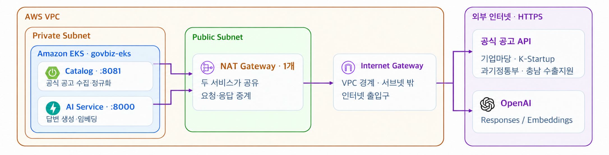
- 외부 API: 비공개 네트워크의 Pod가 NAT Gateway를 통해 공고 API와 OpenAI에 요청합니다.
외부 통신 상세 설정 펼쳐 보기
| 구성 요소 | 세부 설정·역할 |
|---|---|
| Private Subnet · EKS Pod | Catalog :8081 → 공식 공고 수집·정규화 · AI Service :8000 → 답변 생성·임베딩 |
| NAT Gateway · 1개 | Public Subnet / 요청·응답 중계 |
| Internet Gateway | 서브넷 밖의 VPC 경계 · 인터넷 출입구 |
| 공식 공고 API | 기업마당 · K-Startup · 과기정통부 · 충남 수출지원 |
| OpenAI | Responses · Embeddings |
서비스·데이터 — 업무를 처리하고 저장하는 방식
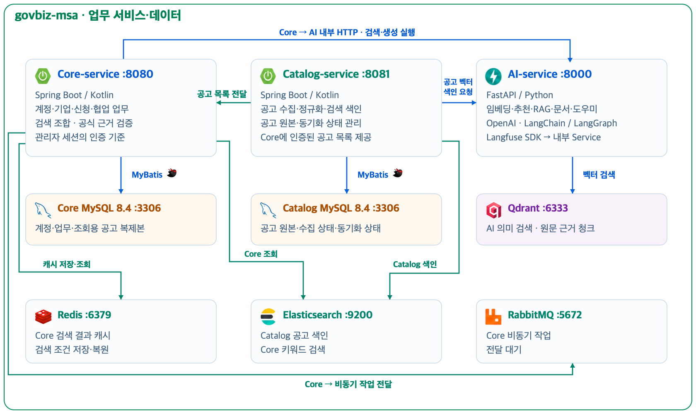
- Core-service: 사용자 업무와 검색을 처리하고, Catalog의 공고 목록을 조회용 데이터에 반영합니다.
- Catalog-service: 공고를 수집·정규화하고 검색 색인을 관리합니다.
- AI-service: 임베딩·모델 추론·벡터 검색 실행을 담당합니다. Qdrant에 공고 검색 벡터와 답변 근거 청크를 저장하고 OpenAI API를 활용해 검색·생성 기능을 제공합니다.
- 저장소: 각 서비스는 역할에 맞는 저장소를 사용합니다.
- 비동기 작업: Core DB에 작업을 기록하고 RabbitMQ에 작업 ID를 전달합니다.
평가·관측 — 실행 기록과 평가 결과의 연결
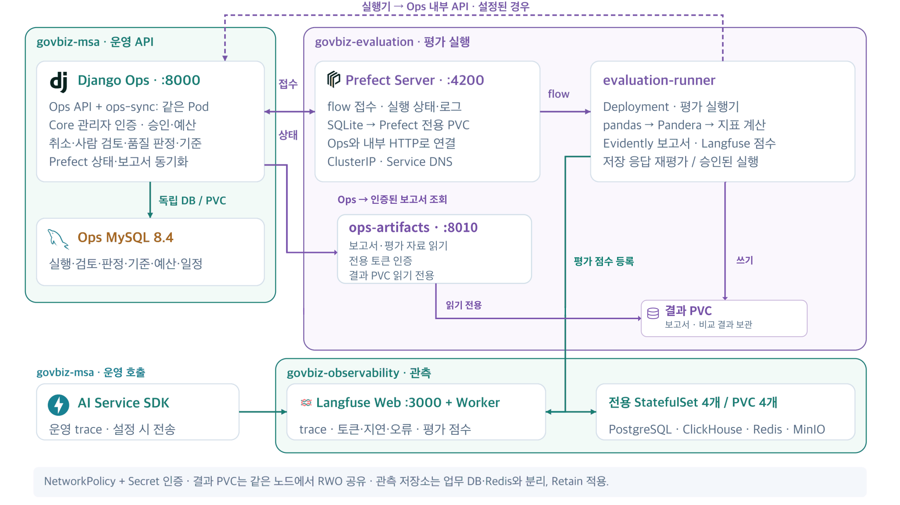
- 실사용 추적: AI 서비스가 실행 기록을 Langfuse에 전송합니다.
- 평가 점수: 평가 실행기가 점수를 계산해 Langfuse에 등록합니다. 실사용 추적과는 별도 경로입니다.
- 평가 결과: 평가 실행기가 결과 파일을 결과 PVC에 저장합니다. ops-artifacts가 파일을 읽기 전용으로 제공하고, Ops는 이를 검증해 실행 요약과 비교 결과를 저장합니다.
- 운영 화면: React는 Ops API에서 평가 결과를 받아 표시합니다.
평가·관측 설정 펼쳐 보기
| 구성 요소 | 세부 설정·역할 |
|---|---|
| Django Ops · :8000 | govbiz-msa / Ops API + ops-sync: 같은 Pod · Core 관리자 인증 · 승인·예산·취소 · 사람 검토·품질 판정·기준 · Prefect 상태·보고서 동기화 · 저장 → Ops MySQL 8.4 (독립 DB / PVC) · 저장 항목: 실행·검토·판정·기준·예산·일정 |
| Prefect Server · :4200 | govbiz-evaluation / ClusterIP · Service DNS · flow 접수 · 실행 상태·로그 · SQLite → Prefect 전용 PVC · Ops와 내부 HTTP로 연결 |
| evaluation-runner | Deployment · 평가 실행기 · pandas → Pandera → 지표 계산 · Evidently 보고서 · Langfuse 점수 · 저장 응답 재평가 / 승인된 실행 |
| ops-artifacts · :8010 | 결과 PVC의 보고서와 별도 평가 자료를 읽기 전용으로 제공 · 전용 토큰 인증 |
| Langfuse | 평가 점수 등록 · 운영 trace와 함께 확인 |
| AI Service SDK | govbiz-msa / 운영 trace · 설정 시 전송 |
| Langfuse Web :3000 + Worker | govbiz-observability · 운영 trace와 평가 점수 관리 |
| 관측 저장소 | PostgreSQL · ClickHouse · Redis · MinIO · 업무 DB·Redis와 별도 관리 |
Ops → ops-artifacts: 인증된 보고서 조회 · 실행기 → Ops 내부 API: 설정된 경우에 호출
서버 배치·저장소 — EKS 클러스터와 노드 구성
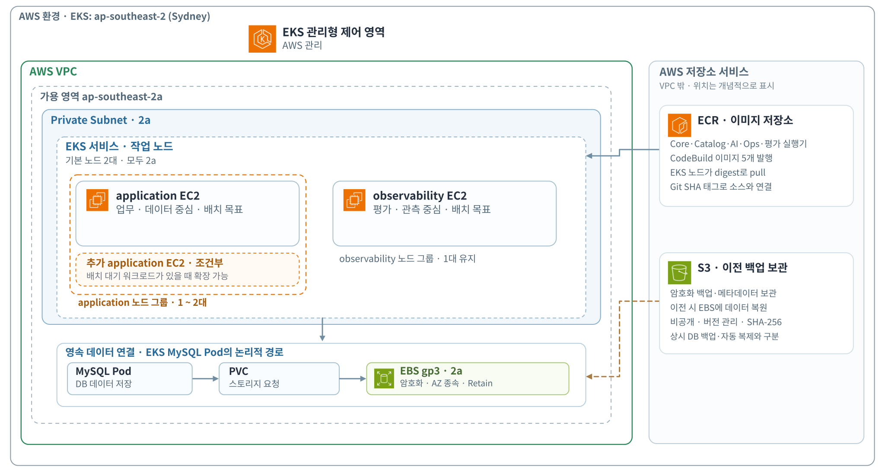
- 노드 배치: 업무·저장소와 평가·관측 구성 요소를 나누고, Core·AI Pod를 두 노드에 분산합니다.
- 자동 확장: 추가 노드로 해결할 수 있으면 Cluster Autoscaler가 application 노드 그룹을 최대 2대까지 확장하도록 설계했습니다.
- 현재 한계: 작업 노드와 데이터 저장소가 2a에 집중되어 있고 MySQL은 단일 복제본입니다. 2a에 장애가 발생하면 서비스와 DB를 함께 사용할 수 없을 수 있으며, EBS 볼륨도 다른 가용 영역의 노드에 직접 연결할 수 없습니다.
- EBS: 서비스 데이터를 볼륨에 보존합니다.
- ECR: 실행 이미지를 보관합니다.
- S3: 이전 백업을 보관합니다.
저장소 상세 설정 펼쳐 보기
| 구성 요소 | 세부 설정·역할 |
|---|---|
| EBS gp3 · 데이터 보존 | EBS CSI → 암호화 PVC 13개 · 업무 7 · 평가 2 · 관측 4 · StorageClass: Retain · AZ 종속 · MySQL은 EKS StatefulSet 유지 |
| ECR · private 이미지 | CodeBuild가 이미지 5개 발행 · EKS 노드가 digest로 pull · immutable git-SHA 태그 · 검증 소스와 실행 이미지 연결 |
| S3 · 이전 백업 보관 | 암호화 백업·메타데이터 · 비공개 · 버전 관리 · SHA-256 · 이전 백업 → EBS 데이터 복원 · 상시 DB 백업·자동 복제와 구분 |
향후 개선점 — 다중 가용 영역의 DB 이중화와 장애 조치
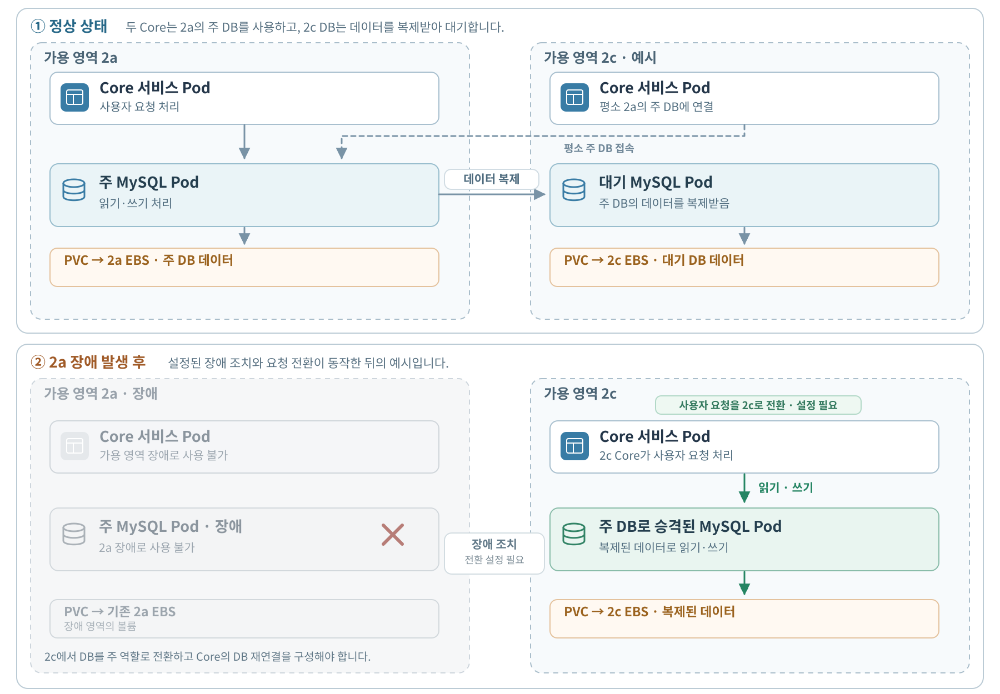
- DB 이중화: 주 DB와 대기 DB를 서로 다른 가용 영역에 두어 장애에 대비합니다.
- 데이터 복제: 평소 2a의 주 MySQL이 읽기·쓰기를 처리하고, 변경 내용을 2c의 대기 MySQL에 복제합니다.
- 장애 발생 시: 요청을 2c의 Core로 전환하고 대기 DB를 주 DB로 승격해 서비스를 이어가도록 구성합니다.
- 구성 필요: DB 복제·승격과 요청 전환, Core의 DB 재연결은 별도로 설정해야 하는 향후 개선안입니다.
향후 개선점 — 백업과 과거 시점 복구
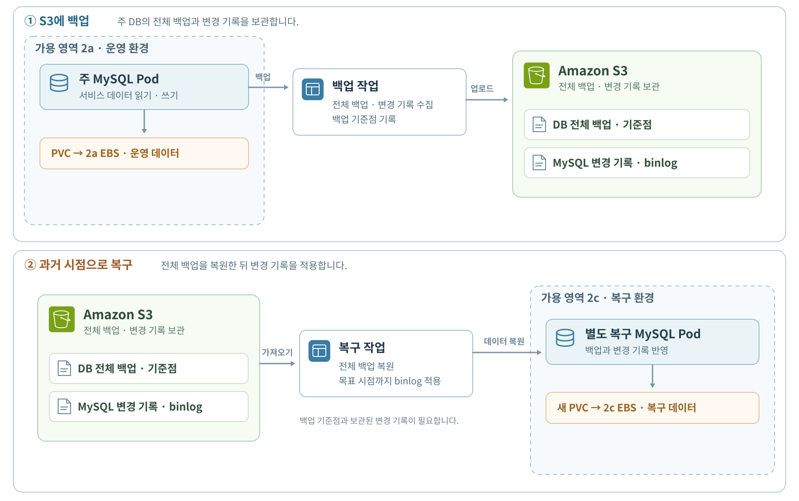
- 백업: 주 MySQL의 일관성 있는 전체 백업을 만들고, MySQL 변경 기록(binlog)과 백업 기준점을 함께 수집하도록 구성합니다.
- 보관: 전체 백업·백업 기준점과 변경 기록을 Amazon S3에 보관하도록 별도로 설정합니다.
- 복구: S3의 백업을 새 EBS를 사용하는 별도 MySQL에 복원한 뒤, 보관된 변경 기록의 범위 안에서 원하는 시점까지 적용합니다.
- 역할: DB 이중화는 장애 시 서비스를 이어가도록 돕고, 백업은 삭제·손상 이전의 데이터 복구에 사용합니다.
3. 구현 정보
3.1. 사용자 의도를 분석해 업무 기능을 연결하는 LLM 기반 라우팅과 Human-in-the-loop를 설계·구현.
자연어 요청을 기존 업무 기능으로 연결
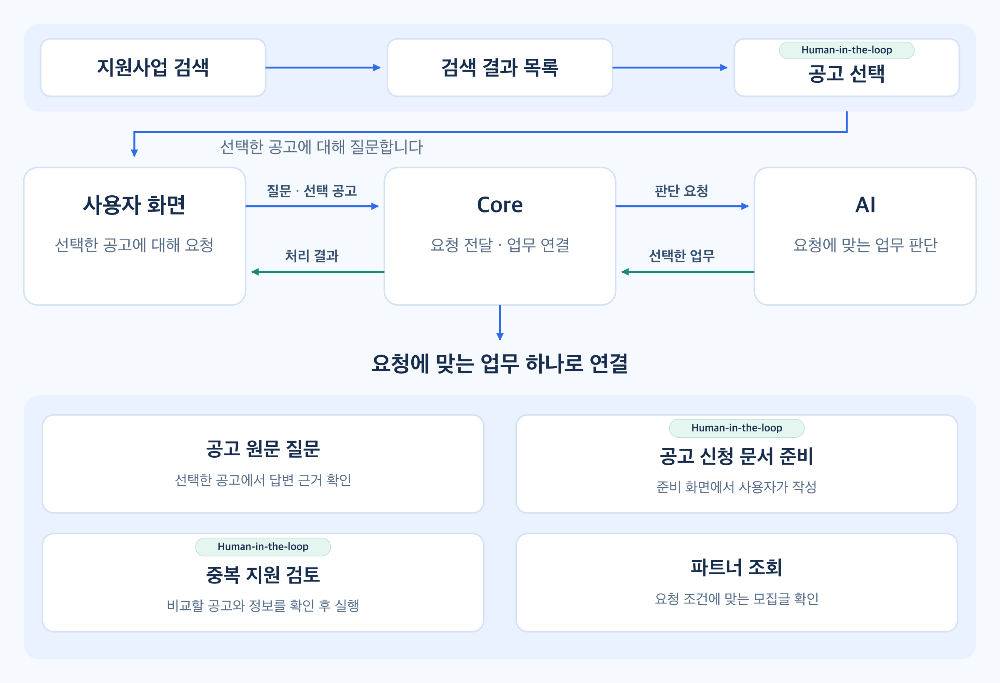
- 공고 선택: 사용자가 지원사업 검색 결과에서 작업할 공고를 선택합니다.
- 업무 판단: Core가 질문과 검색 문맥을 AI에 전달하면, AI가 요청에 맞는 업무 경로 하나를 선택합니다.
- 기능 연결: Core는 공고 선택 여부와 업무별 조건을 확인하고 원문 질문·신청 문서 준비·중복 지원 검토·파트너 조회 중 적절한 기능으로 연결하거나 안내합니다.
- Human-in-the-loop: 사용자가 공고를 선택하고 신청 준비나 중복 검토에 필요한 내용을 확인하며 후속 작업을 직접 진행합니다.
공고 선택(Human-in-the-loop)이후 공고 원문 질문의 흐름도
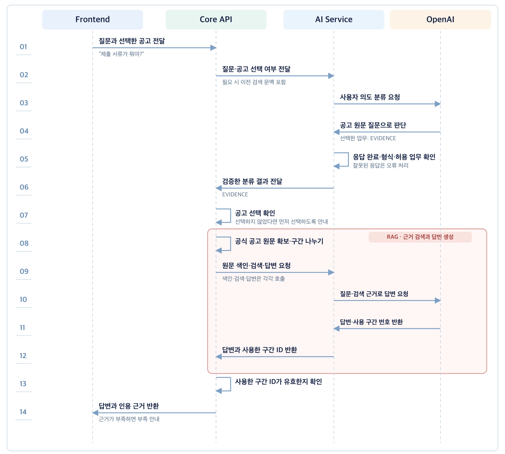
- 질문 전달: 사용자가 선택한 공고와 질문을 Core에 전달하면, Core는 질문과 공고 선택 여부를 AI에 보냅니다.
- 업무 선택: AI는 요청을 공고 원문 질문(
EVIDENCE)으로 분류하고, 응답 형식과 허용된 업무 값이 맞는지 확인합니다. - 공고 확인: Core는 공고가 선택되어 있으면 원문 답변 기능을 실행하고, 선택되지 않았다면 먼저 선택하도록 안내합니다.
- 답변과 근거: 공고 원문을 검색해 답변을 생성하고, Core가 사용한 구간 ID를 확인한 뒤 답변과 근거 또는 근거 부족 안내를 반환합니다.
- RAG 과정 상세보기 : https://ilil1.github.io/ilil1/ai/project/skn34_3th/#section-3-2
3.2. LLM 응답 품질을 측정하고 결과를 비교·보고하는 평가 모듈을 구현하고, Prefect 기반 평가 파이프라인과 평가 실행기를 구축.
LLMOps 개선 프로젝트 링크 : https://github.com/ilil1/GovBiz
평가 모듈과 Prefect 실행 구조
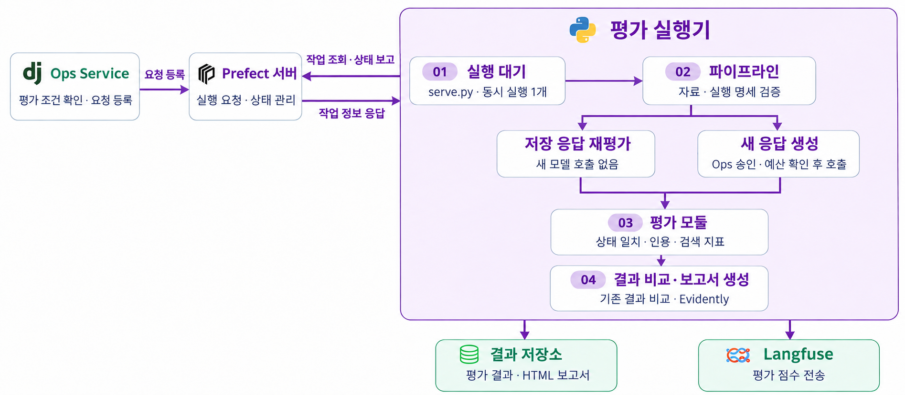
-
평가 실행기:
serve.py가 Prefect에 평가 작업을 등록합니다. 실행기는 Prefect 서버에 실행할 요청이 있는지 주기적으로 확인하고 있다면, 평가 파이프라인을 실행합니다. 확인 간격은 약 10초 입니다. -
평가 파이프라인:
pipelines/에서 입력·실행 조건 확인부터 평가 모듈 호출, 보고서 생성과 점수 전송까지의 순서를 정의합니다. - 실행 방식: 파이프라인은 평가에 사용할 질문·근거와 실행 조건이 요청한 내용과 맞는지 확인합니다. 이후 저장된 응답을 다시 평가하거나, 승인과 예산을 확인한 뒤 새 응답을 만들어 평가합니다.
-
평가 모듈:
evaluation/에서 평가 자료와 저장된 응답을 검증하고, 응답 상태 일치율과 기준 근거 인용 재현율 등을 계산합니다. RAG 평가는 저장된 검색 결과와 답변을 함께 확인합니다. - 결과 비교와 보관: 평가 결과를 기존 기준 결과와 비교해 Evidently HTML 보고서를 만들고 결과 저장소에 보관합니다. 평가 점수는 설정된 Langfuse에 전송합니다.
평가 모듈과 Prefect 실행 흐름도
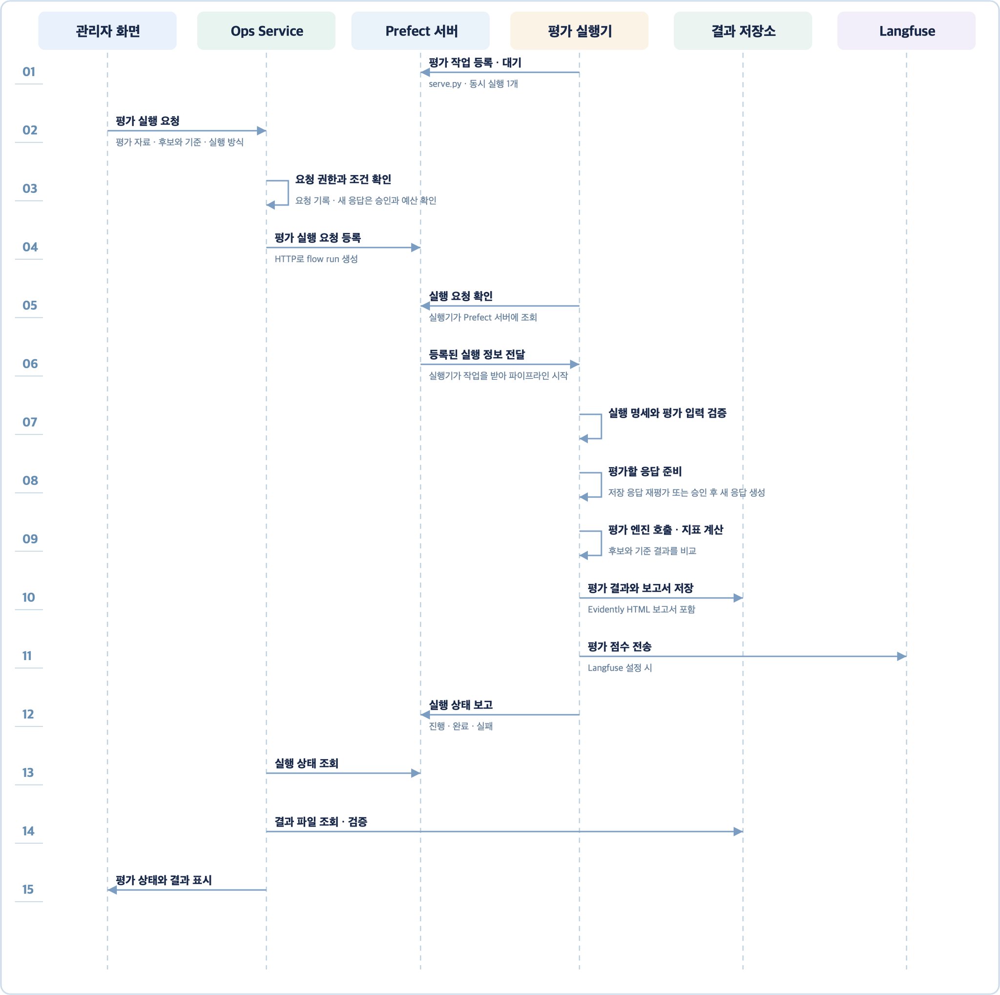
-
01 · 실행기 : 평가 실행기의
serve.py가 Prefect 서버에 평가 작업을 등록, 실행 요청을 기다립니다. - 02~04 · 평가 요청: 관리자가 평가 자료와 실행 방식을 선택하면 Ops Service가 권한과 실행 조건을 확인하고, Prefect 서버에 평가 실행을 요청합니다. 새 응답을 생성하는 경우에는 승인과 예산 조건도 확인합니다.
- 05~06 · 작업 확인: 실행기가 서버에서 요청을 확인하고 실행 정보를 받아 파이프라인을 시작합니다.
- 07~09 · 평가 실행: 파이프라인은 입력과 실행 명세를 검증하고 평가할 응답을 준비한 뒤 평가 모듈을 호출합니다. 저장된 응답을 다시 평가할 때는 새 모델 호출이 없으며, 새 응답 생성은 승인과 예산 조건을 충족한 뒤 진행합니다.
- 10~11 · 결과 저장: 평가 결과와 Evidently 비교 보고서를 결과 저장소에 보관하고, Langfuse가 설정된 경우 평가 점수를 전송합니다.
- 12~15 · 상태와 결과 확인: 실행기 쪽에서 진행·완료·실패 상태를 Prefect 서버에 기록합니다. Ops Service는 필요한 경우 Prefect에서 상태를 조회하고 결과 파일을 확인해 관리자 화면에 보여 줍니다.
-
자동 상태 확인: 관리자가 평가 상세 화면을 열어 둔 동안 진행 중인 상태를 약 5초 간격으로 확인합니다. 별도로
ops-sync가 활성화된 환경에서는 화면을 닫아도 미완료 평가를 기본 약 10초 간격으로 확인합니다. 정상 종료가 확인되면 해당 평가의 반복 확인은 끝납니다.
평가 모듈과 파이프라인 디렉터리 구성
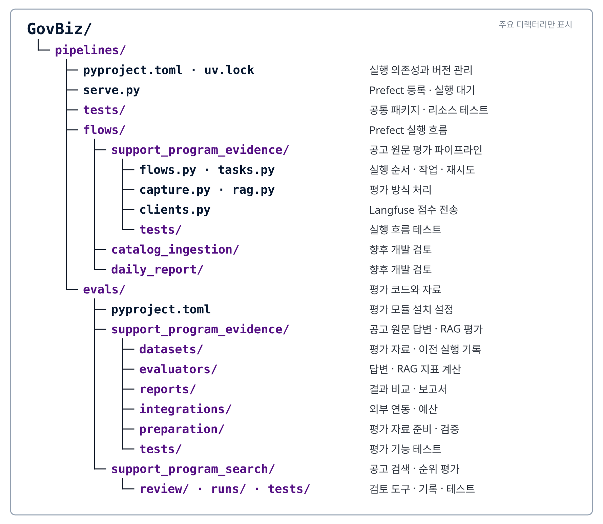
- 평가 실행기:
pipelines/serve.py가 공고 원문 평가 흐름을 Prefect 서버에 등록하고 실행 요청을 기다립니다. 관리자 요청이 접수되면 실행기가 요청을 확인해 해당 파이프라인을 시작합니다. - 평가 실행 흐름:
flows/support_program_evidence/에 평가 실행 순서가 있습니다.flows.py가 전체 흐름을 구성하고,capture.py·rag.py가 평가 방식을 나눠 처리합니다.tasks.py는 단계별 작업과 재시도 정책을,clients.py는 Langfuse 점수 전송과 저장 확인을 담당합니다. - 평가 코드와 자료:
evals/support_program_evidence/는 파이프라인이 호출하는 평가 기능을 담습니다.datasets/에는 평가 자료와 기존 실행 기록이 있고,evaluators/는 답변과 RAG를 평가하며,reports/는 결과 비교와 보고서 생성을 담당합니다. 별도의evals/support_program_search/는 공고 검색·순위 품질을 CLI로 평가합니다. - 외부 연동과 자료 준비:
integrations/는 모델 호출과 예산 확인 등 외부 연동을,preparation/은 평가 자료 준비와 검증을 담당합니다. 평가 결과는 저장소에 기록하며, Langfuse가 설정된 경우 점수도 전송합니다. - 테스트와 향후 확장:
flows/support_program_evidence/tests/는 실행 흐름을,evals/support_program_evidence/tests/와evals/support_program_search/tests/는 각 평가 기능을 검증합니다.pipelines/tests/에는 공통 패키지 구조·설치·리소스 계약 테스트가 있습니다.flows/catalog_ingestion/과flows/daily_report/는 추후 개발을 검토하기 위한 안내만 있으며 아직 실행되는 파이프라인은 없습니다.
3.3. Ops-service 운영 API와 Langfuse·Prefect를 연동해 LLM 응답 품질 평가·추적·실행 관리 체계인 LLMOps를 구축.
LLMOps 개선 프로젝트 링크 : https://github.com/ilil1/GovBiz
관리자 기능 — 운영 — 실제 서비스 확인
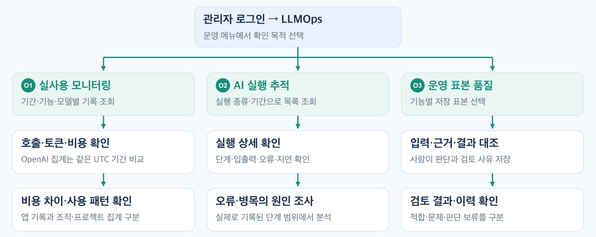
- O1 실사용 모니터링: AI 호출 횟수·토큰 사용량·토큰 사용 비용을 확인합니다.
- O2 AI 실행 추적: 기록된 실행 단계·입출력·오류를 살펴봅니다.
- O3 운영 표본 품질: 저장된 응답 표본을 사람이 검토합니다.
운영 표본 검토
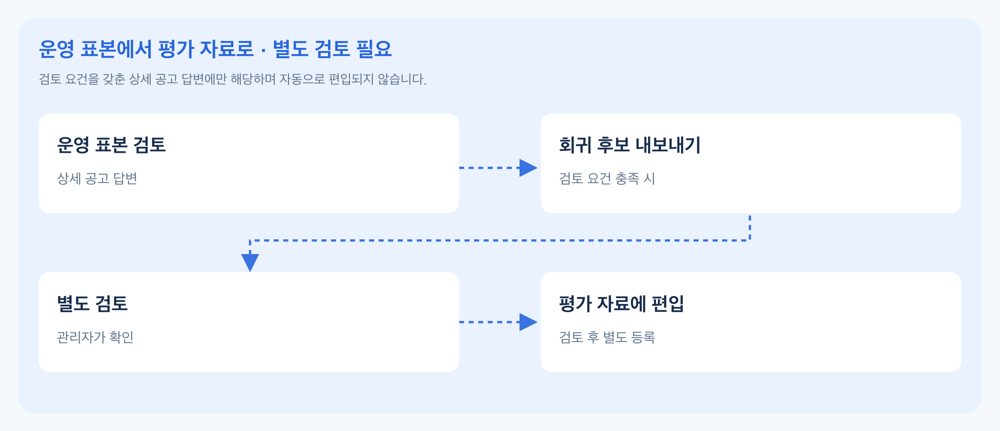
- 운영 표본 검토: 실제 서비스에서 발생한 상세 공고 질문과 답변 중 저장된 표본을 관리자가 살펴봅니다. 답변이 질문에 맞는지, 표시된 공고 원문이 답변의 근거로 적절한지 확인합니다.
- 회귀 후보 내보내기: 검토한 표본 중 기준 답변과 기대하는 응답 상태, 필요한 인용 근거 등 요건을 갖춘 사례를 회귀 후보로 저장해 내보낼 수 있습니다.
- 별도 검토: 관리자가 내보낸 후보를 평가에 사용하기에 적절한지 다시 확인합니다. 예를 들어 질문과 기준 답변, 기대하는 근거가 서로 맞는지 살펴봅니다.
- 평가 자료에 등록: 추가 검토를 마친 사례를 별도로 평가 자료에 등록하면, 이후 평가를 실행할 때 활용할 수 있습니다. 운영 표본이나 회귀 후보가 기존 평가 자료에 자동으로 편입되지는 않습니다.
테스트 메뉴 번호 안내
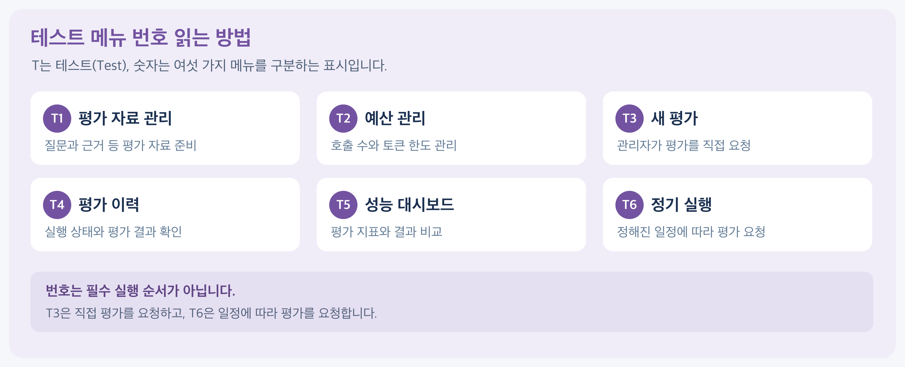
- T1~T5: 평가 자료와 예산 준비부터 평가 실행, 결과 확인과 비교까지의 흐름을 기준으로 번호를 배치했습니다.
- T6: T6 정기 실행은 T5 다음에 진행하는 마지막 단계가 아니라, 관리자가 직접 실행하는 T3과 별도로 평가를 요청하는 방법입니다. 두 경로 모두 이후 공통 접수와 평가 실행으로 이어집니다.
관리자 기능 — 테스트 — 평가 준비부터 결과 비교까지
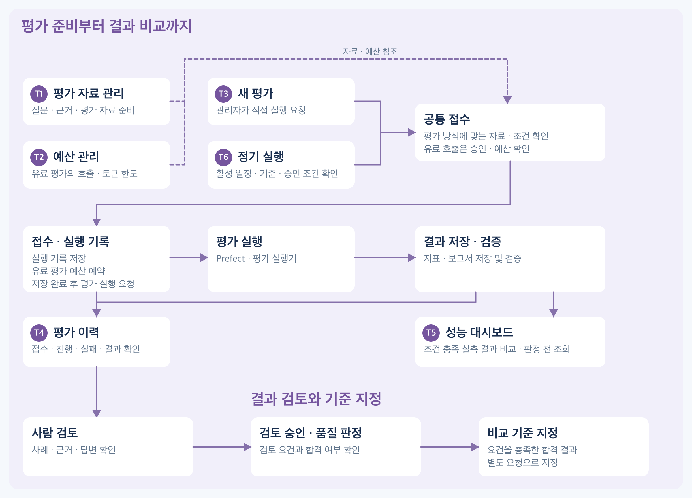
- T1 평가 자료 관리: 평가에 사용할 질문·근거·조건을 준비합니다.
- T2 예산 관리: 평가에 사용할 호출과 토큰 한도를 확인합니다.
- T3 새 평가: 자료와 모델을 선택해 평가를 접수합니다.
- T4 평가 이력: 실행 결과를 확인하고 답변을 검토합니다.
- T5 성능 대시보드: 저장된 평가 결과를 같은 조건으로 비교합니다.
- T6 정기 실행: 활성화·승인·조건 확인 후 일정에 따라 평가를 접수합니다.
- 평가 실행과 검토 단계
- 접수·실행 기록: ops-service가 실행 요청을 기록하고, 유료 평가의 사용량을 예약한 뒤 평가 실행을 요청합니다. 접수·진행·실패 상태는 평가 이력에서 확인합니다.
- 평가 실행: 평가 실행기가 Prefect 서버에서 실행 요청을 확인하고 평가 파이프라인을 실행합니다. 파이프라인은 선택한 자료와 방식에 따라 평가 모듈을 호출해 지표를 계산하고 비교 보고서를 생성합니다.
- 결과 저장·검증: 평가 실행기가 결과 파일을 저장하면 Ops가 완료된 결과를 읽고 검증해 요약과 비교 결과를 기록합니다.
- 비교 기준 지정: 현재 유효한 합격 결과 중 추가 요건을 충족한 실행을 관리자가 별도로 비교 기준으로 지정합니다.
— 운영 — O1 실사용 모니터링 구조도
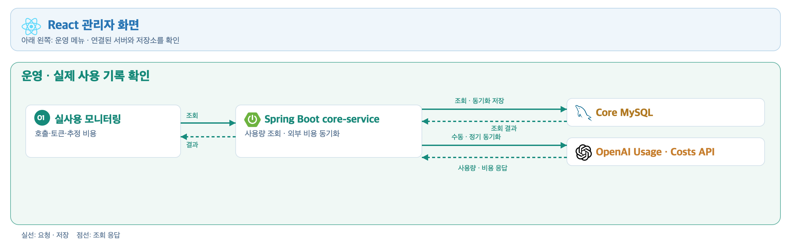
- 실사용 모니터링: Core MySQL에 기록된 호출·토큰·추정 비용과 OpenAI Usage·Costs API에서 가져온 사용량·비용을 같은 기간 기준으로 확인합니다.
O1 실사용 모니터링 흐름도
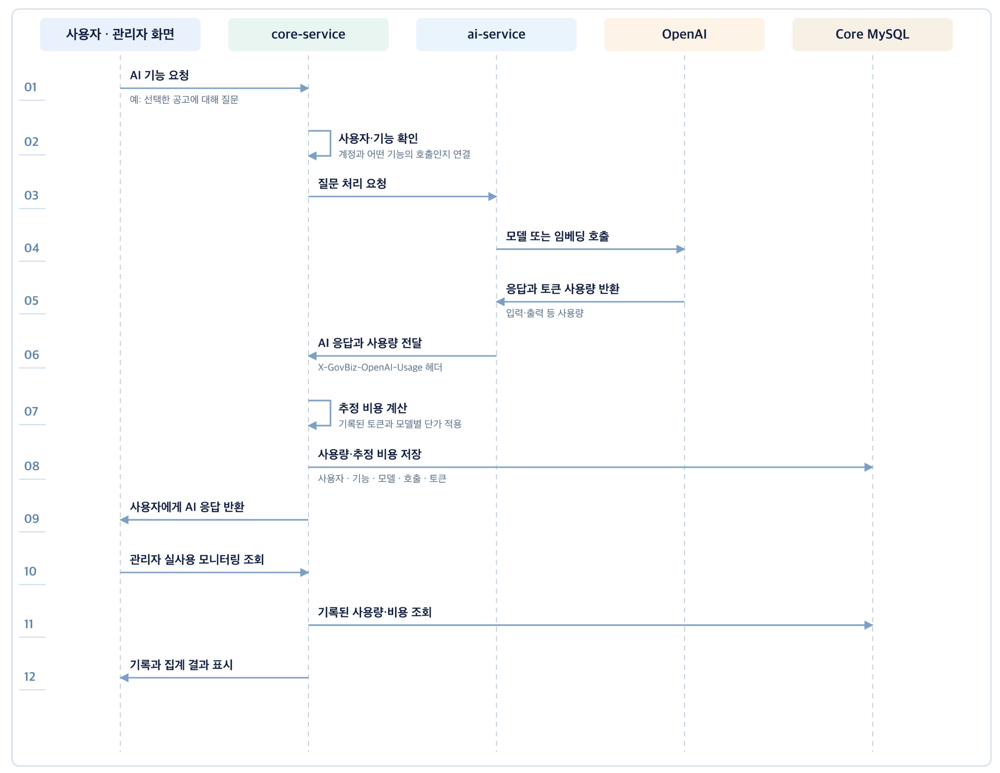
- 사용자·기능 확인: core-service가 요청한 사용자와 어떤 기능인지 연결합니다.
- 사용량 수집: ai-service가 OpenAI 응답의 토큰 사용량을 수집해 core-service에 전달합니다.
- 추정 비용 기록: core-service가 모델별 단가를 적용해 사용량·추정 비용을 MySQL에 저장합니다.
— 운영 — O2 AI 실행 추적 구조도
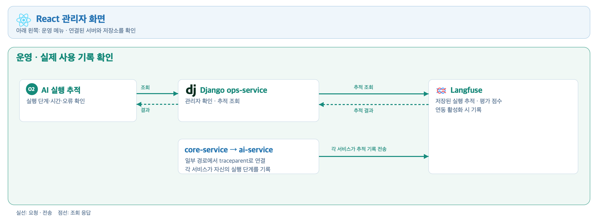
- O2 AI 실행 추적: 설정된 core-service와 ai-service가 계측된 실행 단계·시간·오류 등의 추적 기록을 Langfuse에 전송합니다. 관리자가 화면에서 추적을 조회하면, ops-service가 Langfuse API에서 기록을 가져와 화면에 전달합니다. 일부 호출은 traceparent를 전달해 Core와 AI의 추적을 연결합니다.
O2 AI 실행 추적 흐름도
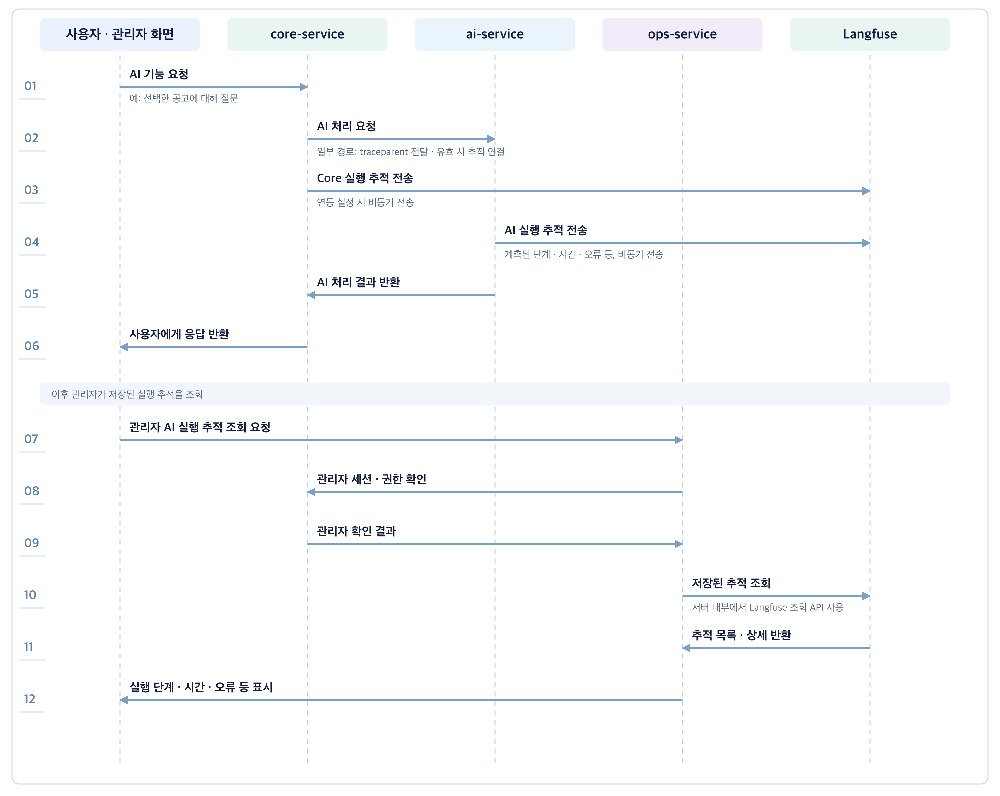
- 추적 기록: 연동 설정이 활성화되면 core-service와 ai-service가 계측된 실행 기록을 Langfuse로 전송합니다. 일부 호출은 traceparent를 전달해 Core와 AI의 추적을 연결합니다.
- 관리자 확인: ops-service는 core-service에서 관리자 권한을 확인한 뒤 Langfuse의 추적을 조회 API 를 사용해서 읽어 화면에 전달합니다.
- 기록 범위: 추적은 Langfuse에 보관하며 ops-service DB에 복제하지 않습니다. 계측된 기능만 기록되며 질문·답변 원문이 항상 포함되지는 않습니다.
core-service 추적 기록 전송 방식
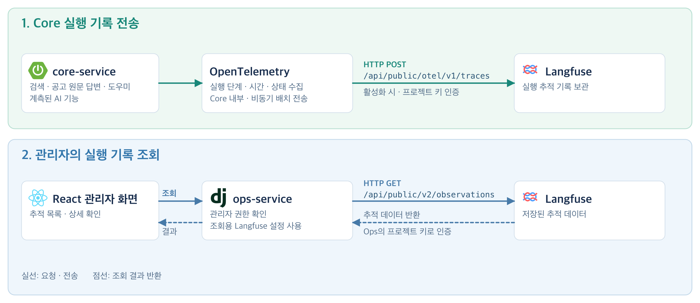
- 추적 생성: core-service가 지원사업 검색·공고 원문 답변·AI 도우미의 계측된 실행 단계와 시간·성공 여부를 기록합니다.
- 전송: 연동이 활성화되면 OpenTelemetry가 기록을 모아 Langfuse의
POST /api/public/otel/v1/traces로 비동기 전송합니다. Langfuse 프로젝트 키로 인증합니다. - 조회: 관리자가 화면에서 조회하면 ops-service가 Langfuse의
/api/public/v2/observations에서 기록을 읽어 전달합니다. 기록 전송과 관리자 조회는 별도 경로입니다. - 구현 근거
- Core 추적 설정: OpenTelemetry 전송기를 설정해 기록한 추적을 Langfuse로 전송합니다.
- 업무별 추적 적용: 공고 조회·원문 확보·구간 준비를
tracing.observe(...)로 감쌉니다. - 직접 구현한 observe: 프로젝트의 Helper가 OpenTelemetry
Tracer로 추적 구간의 시작·종료와 성공·오류 상태를 기록합니다. - Core→AI 추적 연결: 내부 HTTP 요청에 현재 추적의
traceparent를 전달합니다. - Ops 추적 조회: Ops가 Langfuse API에서 저장된 추적을 조회해 관리자 화면에 전달합니다.
ai-service 추적 기록 전송 방식
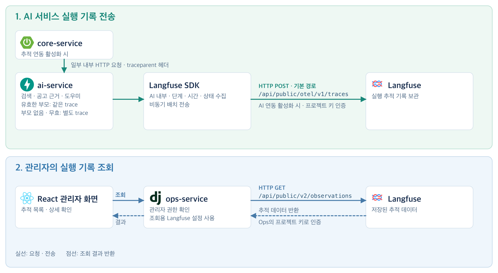
- 추적 생성: AI 서비스가 검색·공고 근거 답변·도우미 등 계측된 기능의 실행 단계와 시간·상태를 기록합니다. 모델 이름과 사용량이 제공된 경우 토큰 수도 기록할 수 있습니다.
- 전송: 연동이 활성화되면 Langfuse Python SDK가 추적 기록을 모아 비동기로 전송합니다. 기본 경로는
POST /api/public/otel/v1/traces이며, 설정에 따라 경로를 변경할 수 있습니다. - core-service와 연결: 일부 경로에서는 core-service가 보낸 유효한
traceparent를 이어받아 같은 요청의 추적에 연결합니다. 유효한 부모 정보가 없으면 별도 추적으로 시작합니다. - 조회와 기록 범위: 관리자가 조회하면 ops-service가 Langfuse API에서 기록을 가져옵니다. AI 추적에는 질문·답변·문서 본문을 넣지 않도록 처리하며, 실행 기록과 평가 점수 등록은 별개입니다.
- 구현 근거
- AI 추적 설정: Langfuse 연동 활성화 여부와 서버 주소·프로젝트 키 등 환경 설정을 읽고 검증합니다.
- Langfuse SDK와 관측 구간:
LLMTracing이 SDK를 초기화하고observation구간을 생성합니다. - AI 답변 추적 적용:
evidence.answer구간을 열어 답변 작업과 검증 상태를 기록합니다. - 모델 호출과 사용량:
evidence.model로 모델 호출을 감싸고 제공된 경우 토큰 사용량을 기록합니다. - Core 추적 이어받기: 내부 HTTP 요청의
traceparent를 읽어 상위 추적과 연결합니다.
— 운영 — O3 운영 표본 품질 구조도
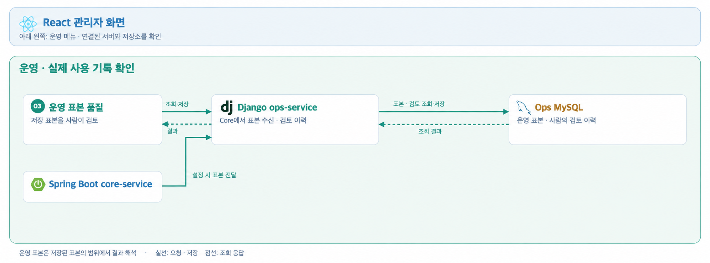
- Core → Ops 표본 전달: 설정된 수집 조건에 맞는 성공 응답 일부를 core-service가 선별해 ops-service로 비동기 전달합니다.
- Ops의 저장과 조회: ops-service는 전달받은 운영 표본을 Ops MySQL에 저장하고, 관리자 화면에서 조회를 요청하면 저장된 표본을 가져와 보여줍니다.
- 관리자의 검토: 관리자는 운영 표본 품질 화면에서 질문·근거·결과를 살펴보고 검토 판단과 사유를 기록합니다. 검토 이력도 Ops MySQL에 저장됩니다.
O3 운영 표본 품질 흐름도
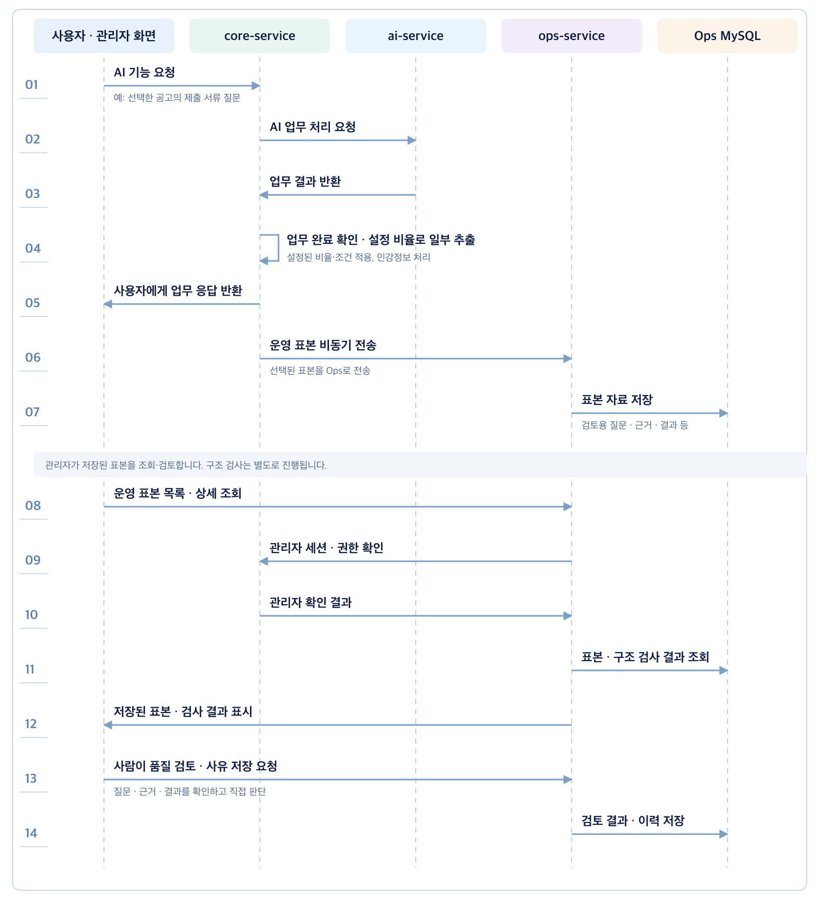
- 표본 수집: core-service는 설정된 조건에 맞는 성공 사례 일부를 선별해 ops-service에 비동기로 전달합니다. 이후 Ops MySQL에 표본을 저장합니다.
- 사람 검토: 관리자가 질문·근거·결과를 확인하고 검토 결과와 사유를 저장합니다.
- 회귀 후보: 요건을 갖춘 상세 공고 답변은 회귀 후보로 내보낼 수 있으며, 평가 자료에 넣으려면 별도 검토와 등록이 필요합니다.
— 테스트 — T1 평가 자료 관리 구조도
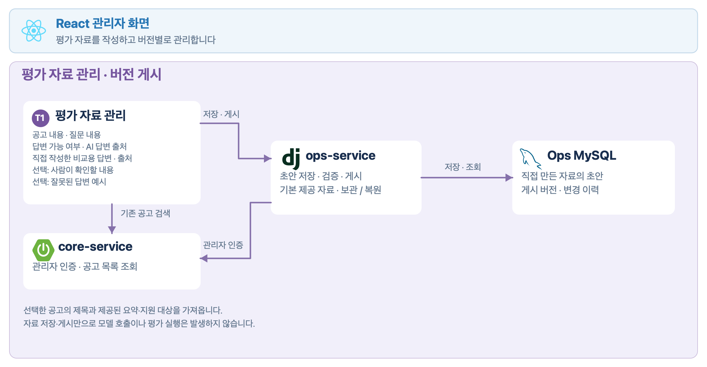
- 자료 작성과 저장: 관리자가 공고 내용과 질문을 입력하고, 답변 가능 여부와 AI 답변의 출처를 설정한 뒤 비교용 답변을 작성합니다. 필요한 경우 사람이 확인할 내용과 잘못된 답변 예시도 추가할 수 있습니다. ops-service는 자료를 검증해 초안과 게시 버전을 Ops MySQL에 저장합니다.
- 관리자 인증: ops-service는 core-service에 요청해 현재 관리자 세션과 권한을 확인합니다.
- 기존 공고 검색: 관리자는 core-service에서 공고를 검색해 제목과 제공된 요약·지원 대상을 가져올 수 있습니다. 필요한 원문 근거는 직접 확인하고 보완합니다.
- 평가 자료 활용: 기본 제공 자료 또는 직접 만든 자료의 게시 버전을 새 평가에서 선택할 수 있습니다.
T1 평가 자료 관리 흐름도
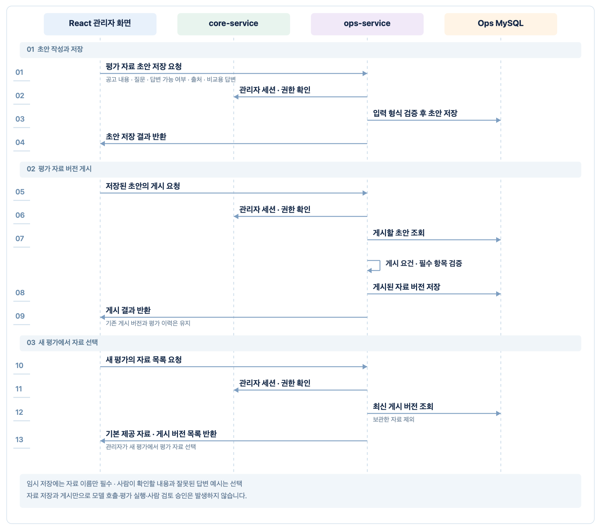
- 01 초안 작성과 저장: 관리자는 자료 이름을 입력해 초안을 임시 저장할 수 있습니다. 공고 내용·질문·답변 가능 여부·출처·비교용 답변을 작성하며, 사람이 확인할 내용과 잘못된 답변 예시는 선택해 추가합니다. ops-service는 core-service에서 관리자 권한을 확인하고 입력 형식을 검증한 뒤 초안을 Ops MySQL에 저장합니다.
- 02 평가 자료 버전 게시: 관리자가 저장된 초안의 게시를 요청하면 ops-service가 관리자 권한과 게시 요건을 확인합니다. 검증을 통과한 자료는 별도 버전으로 저장하며, 이전 게시 버전과 평가 이력은 유지됩니다.
- 03 새 평가에서 자료 선택: 관리자가 새 평가 화면을 열면 ops-service가 기본 제공 자료와 보관되지 않은 자료의 최신 게시 버전을 목록으로 제공합니다.
— 테스트 — T2 예산 관리 구조도
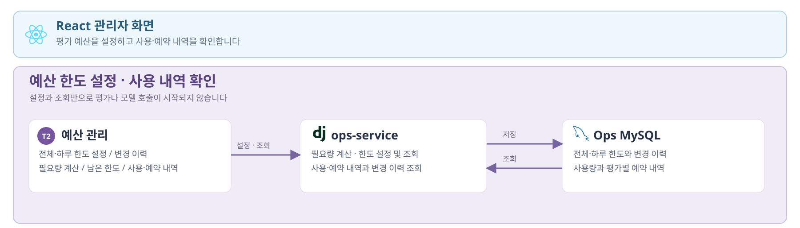
- 전체 사용 한도: 관리자가 AI 요청 횟수와 입력·출력 토큰의 누적 한도를 설정합니다. 날짜가 바뀌어도 유지되며, 확인된 사용량과 아직 정리되지 않은 예약을 함께 고려해 남은 한도를 보여줍니다.
- 하루 평가 한도: 필요할 때 서울 시간 자정을 기준으로 하루 한도를 별도로 설정할 수 있습니다. 하루 한도를 적용해도 전체 한도는 함께 확인합니다.
- 평가 필요량 확인: 평가 자료·모델·횟수를 선택하면 실행에 필요한 최대 요청 횟수와 토큰 양을 계산합니다. 계산한 값을 한도 입력에 활용하거나 직접 입력할 수 있으며, 이 단계에서 평가나 모델 호출이 실행되지는 않습니다.
- 사용·예약 내역: ops-service가 Ops MySQL의 장부를 조회해 사용·예약 합계, 평가별 예약 상태와 한도 변경 이력을 보여줍니다. 표시되는 한도와 사용량은 실제 청구 금액이 아닙니다.
T2 예산 관리 흐름도
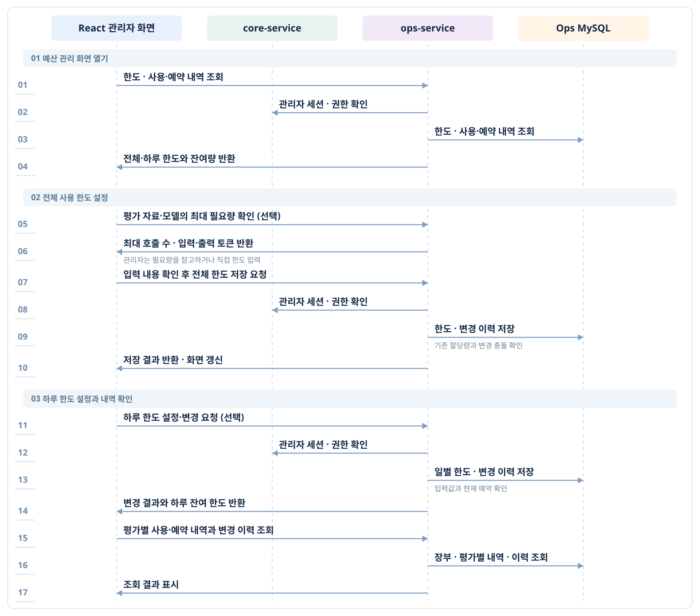
• 01 예산 관리 화면 열기: Ops MySQL에서 전체·하루 한도와 사용·예약 내역을 조회해 표시합니다.
• 02 전체 사용 한도 설정: 관리자는 평가 자료와 모델의 최대 필요량을 참고하거나 직접 호출 수와 입력·출력 토큰 한도를 입력합니다. ops-service가 기존 할당량과 변경 충돌을 확인한 뒤 한도와 변경 이력을 저장합니다.
• 03 하루 한도 설정과 내역 확인: 관리자는 하루 한도를 설정하거나 변경하고, 평가별 사용·예약 내역과 한도 변경 이력을 확인합니다. ops-service는 입력값과 현재 예약을 확인해 저장하고 결과를 화면에 반환합니다.
— 테스트 — T3 새 평가 구조도
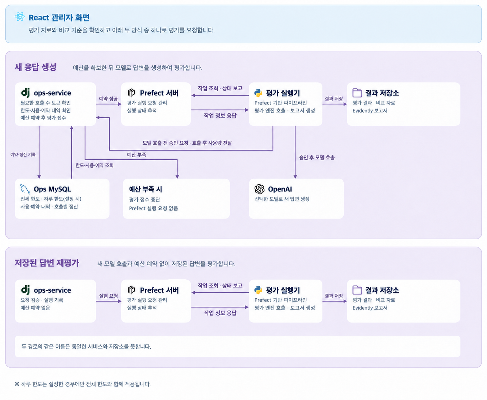
- 평가 준비와 접수: 관리자는 평가 자료를 선택하고, 저장된 답변을 다시 확인할지 새 응답을 생성할지 확인합니다. 이후 비교할 답변을 선택하며, 새 응답을 생성할 때는 모델과 전송 자료·최대 호출 예산을 확인하고 동의한 뒤 평가를 실행합니다.
- 예산 확인과 예약: 새 응답 생성 요청을 받은 ops-service는 전체 한도와 설정된 하루 한도, 사용·예약 내역을 확인해 필요한 호출 수와 토큰을 예약합니다. 예약이 성공해야 Prefect에 실행을 요청하며, 실패하면 평가 접수를 중단합니다. 저장된 답변을 다시 확인하는 평가는 새 모델 호출과 예산 예약 없이 실행합니다.
- 호출 승인과 정산: 새 응답을 생성할 때 평가 실행기는 모델 호출마다 ops-service에 승인을 요청합니다. ops-service는 예약 조건과 모델·호출 순서·취소 여부 등을 확인해 승인하거나 거절합니다. 승인이 거절되거나 확인되지 않으면 해당 모델 호출을 막고 평가를 중단합니다. 호출 후 확인된 사용량은 정산합니다.
- 평가 실행과 결과 저장: ops-service가 Prefect에 실행을 요청하면 평가 실행기가 선택한 방식으로 답변을 평가하고 지표와 보고서를 생성합니다. 결과 파일은 결과 저장소에 보관하고 실행 상태와 결과 요약은 동기화하여 확인할 수 있습니다.
T3 새 평가 흐름도
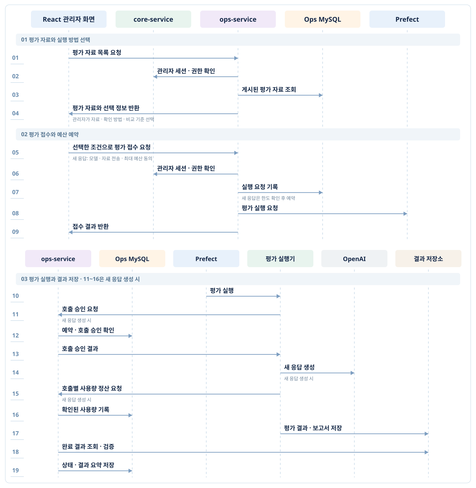
- 01 평가 자료와 실행 방법 선택: 관리자 화면이 평가 자료 목록을 요청하면 ops-service가 관리자 권한을 확인하고 선택할 수 있는 자료를 제공합니다. 관리자는 평가 자료, 답변 확인 방법과 비교 기준을 선택합니다.
- 02 평가 접수와 예산 예약: 관리자가 선택한 조건으로 평가를 요청하면 ops-service가 요청을 검증하고 실행 기록을 저장한 뒤 Prefect에 실행을 요청합니다. 새 응답 생성인 경우 전체·하루 예산 한도를 확인하고 필요한 호출 수와 토큰을 예약합니다.
- 03 평가 실행과 결과 저장: 평가 실행기가 선택한 방식으로 평가하고 결과와 보고서를 저장합니다. 새 응답을 생성할 때는 모델 호출 전 승인을 요청하고, 호출 후 확인된 사용량을 정산합니다. ops-service는 완료된 결과를 확인해 실행 상태와 결과 요약을 저장합니다. 저장된 답변을 다시 확인하는 경우 모델 호출과 예산 예약은 발생하지 않습니다.
— 테스트 — T4 평가 이력 구조도
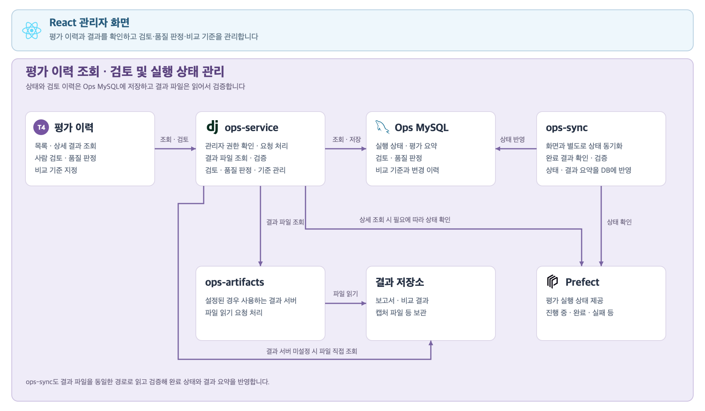
- 평가 이력 조회: 관리자 화면에서 평가 목록이나 상세 결과를 요청하면 ops-service가 관리자 권한을 확인하고, Ops MySQL에 저장된 실행 상태와 평가 요약을 조회합니다.
- 실행 상태 동기화: ops-sync가 화면과 별도로 Prefect의 실행 상태를 주기적으로 확인하고, 확인된 상태와 결과 요약을 Ops MySQL에 반영합니다. 상세 조회 시에도 ops-service가 필요에 따라 상태를 확인합니다.
- 결과 파일 확인: ops-service와 ops-sync는 설정에 따라 ops-artifacts를 거치거나 결과 저장소에서 파일을 직접 읽습니다. 결과 파일을 검증한 뒤 완료 상태와 요약을 반영합니다. 관리자가 보고서나 검토 자료를 요청하면 ops-service가 이를 제공합니다.
- 검토와 비교 기준 관리: 관리자는 평가 결과와 근거를 검토하고 품질 판정을 요청할 수 있습니다. 검토와 판정 이력은 Ops MySQL에 저장되며, 조건을 충족한 결과를 비교 기준으로 지정하거나 해제할 수 있습니다.
T4 평가 이력 흐름도
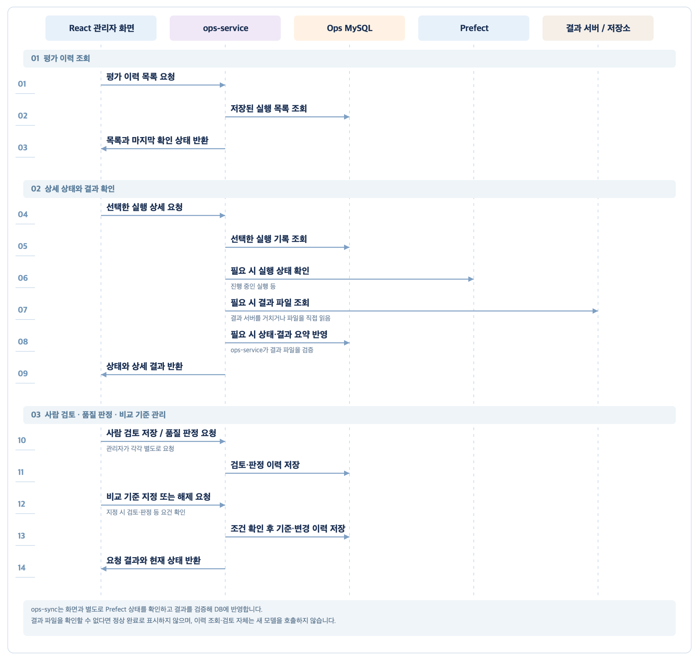
- 01 평가 이력 조회: 관리자 화면이 목록을 요청하면 ops-service가 Ops MySQL에 저장된 실행 기록과 마지막으로 확인된 상태를 반환합니다.
- 02 상세 상태와 결과 확인: 실행을 선택하면 ops-service가 저장된 기록을 읽고, 필요 시 Prefect 상태와 결과 파일을 확인합니다. 결과를 검증한 뒤 필요한 상태와 요약을 DB에 반영합니다. ops-sync도 화면과 별도로 상태를 확인합니다.
- 03 검토와 품질 판정: 관리자가 결과를 확인하고 사람 검토를 저장하거나 품질 판정을 요청하면, ops-service가 각각의 결과와 이력을 DB에 저장합니다.
- 04 비교 기준 관리: 관리자가 기준 지정 또는 해제를 요청하면 ops-service가 필요한 조건을 확인하고 기준과 변경 이력을 저장한 뒤 결과를 반환합니다.
— 테스트 — T5 성능 대시보드 구조도
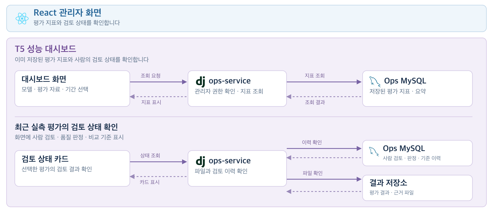
- T5 성능 대시보드 → Ops MySQL: 모델·평가 자료·기간을 선택하면 ops-service가 DB에 저장된 평가 요약을 읽어 답변 상태 일치율, 근거 인용 재현율, 지연 시간 등을 보여줍니다. 데이터가 없는 지표는 ‘미측정’으로 표시될 수 있으며, 조회만으로 새 평가를 실행하지 않습니다.
- ops-service → 결과 저장소: 대시보드의 최근 실측 평가에서 ‘사람 검토’, ‘품질 판정’, ‘활성 비교 기준’을 보여줄 때, ops-service가 결과·근거 파일과 DB의 검토 이력을 함께 확인합니다. 파일은 설정에 따라 ops-artifacts를 거치거나 직접 읽습니다.
예시: ‘평가 자료 관리’에서 ‘제출 서류가 무엇인가요?’라는 질문과 공고 근거를 저장합니다. 해당 자료의 실측 결과가 이미 있다면 ‘성능 대시보드’에서 지표와 검토 상태를 확인할 수 있습니다. 지표는 평가 자료 범위의 결과이며 서비스 전체의 정확도를 뜻하지 않습니다.
T5 성능 대시보드 흐름도
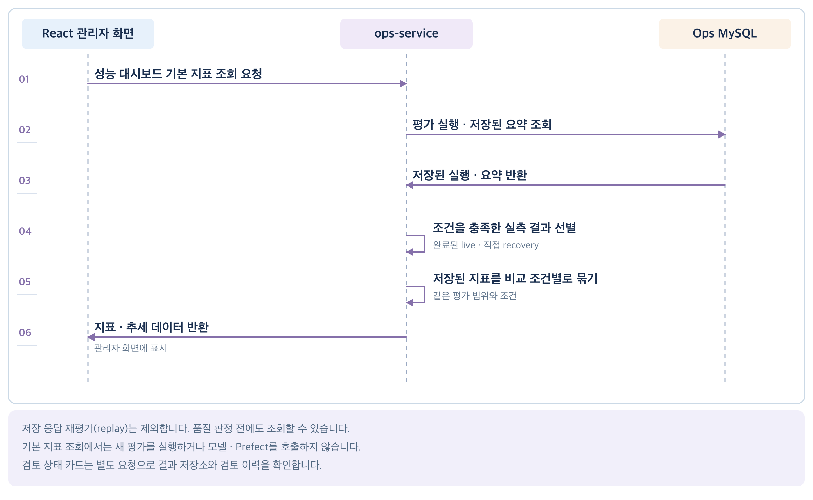
- 결과 조회: 관리자 화면이 대시보드를 요청하면 Ops가 DB에 저장된 평가 실행과 요약을 조회합니다.
- 비교 대상 선별: 비교 조건을 충족하는 완료된 실측 평가와 직접 복구 결과를 모아 지표·추이를 표시합니다. 저장 응답 재평가는 제외합니다.
- 조회와 검토: 대시보드는 품질 판정 전에도 조회할 수 있으며, 조회만으로 새 평가나 모델 호출은 발생하지 않습니다. 검토 상태 카드는 별도 요청으로 확인합니다.
- 평가 자료 관리 : 평가에 사용할 질문과 근거, 기대 조건을 등록하고 버전별로 관리합니다. 자료 등록만으로 모델이 호출되지는 않습니다.
— 테스트 — T6 평가와 실행
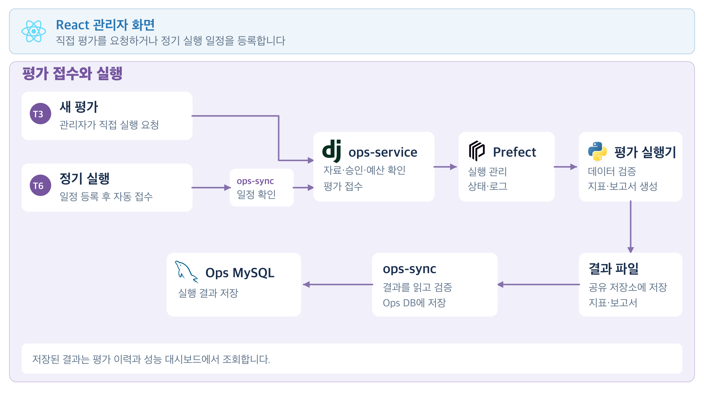
- 새 평가 : Ops가 권한·자료·승인·예산을 확인하고 Prefect에 실행을 접수합니다. 평가 실행기는 pandas·Pandera로 데이터를 처리하고 지표와 Evidently 보고서를 만들며, 설정된 경우 Langfuse에 점수를 등록합니다.
- 정기 실행 : Ops가 평가 일정과 실행 조건을 관리합니다. 활성화된 일정이 도래하면 실행 조건과 예산을 확인해 Prefect에 평가를 접수합니다.
평가 방식: 저장된 응답의 재평가는 새 모델 호출 없이 실행할 수 있습니다. 새 답변을 생성하는 평가는 별도의 승인과 예산이 필요합니다.
모델을 바꾼 효과를 같은 조건에서 비교
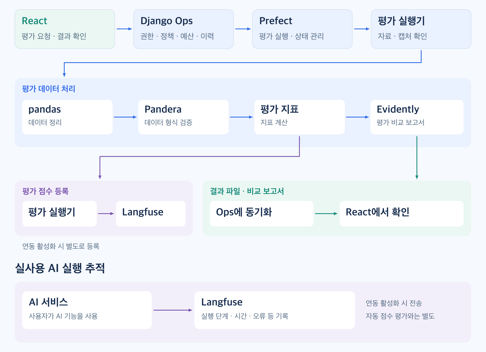
- 운영 관리: React는 운영 화면을 제공하고, Django Ops는 정책·권한·이력을 관리합니다.
- 평가 실행: Prefect가 별도 평가 실행을 관리합니다.
- 데이터 처리: pandas로 데이터를 정리하고 Pandera로 형식을 검증한 뒤 지표를 계산합니다.
- 실행 추적: Langfuse로 실행 중의 호출 기록을 수집·추적합니다.
- 평가 결과: Evidently로 결과를 비교하며, 보고서와 Langfuse 점수 등록은 별도로 처리합니다.
목적에 맞는 세 가지 평가 경로
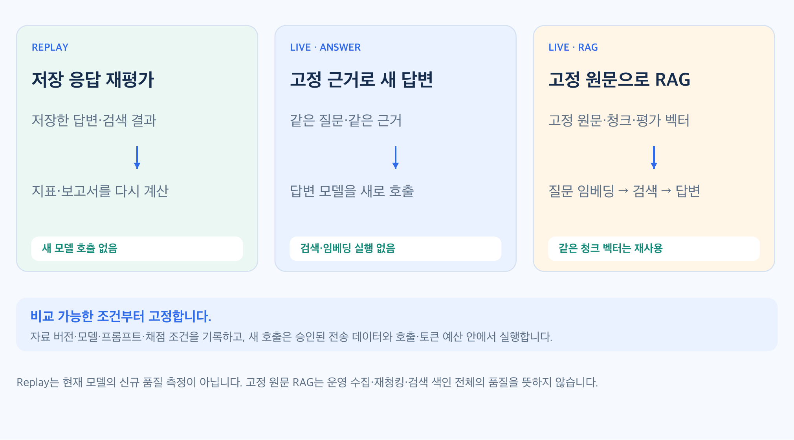
저장 응답 재평가는 당시 응답을 다시 분석합니다. 고정 근거 답변은 같은 근거에서 새 답변을, 고정 원문 RAG는 평가 자료 전용 검색과 새 답변을 비교합니다. 운영 원문 재수집·재청킹·운영 검색 색인 전체의 성능 측정과는 구분합니다.
구현 근거: Ops 운영 API · 평가 실행 흐름 · 분석·보고서·점수 등록 · 운영 화면 원본
3.4. Kubernetes 리소스 설계, HPA·Cluster Autoscaler 기반 Pod·노드 자동 확장 및 영속 스토리지 구성.
Namespace별 서비스·리소스 구성
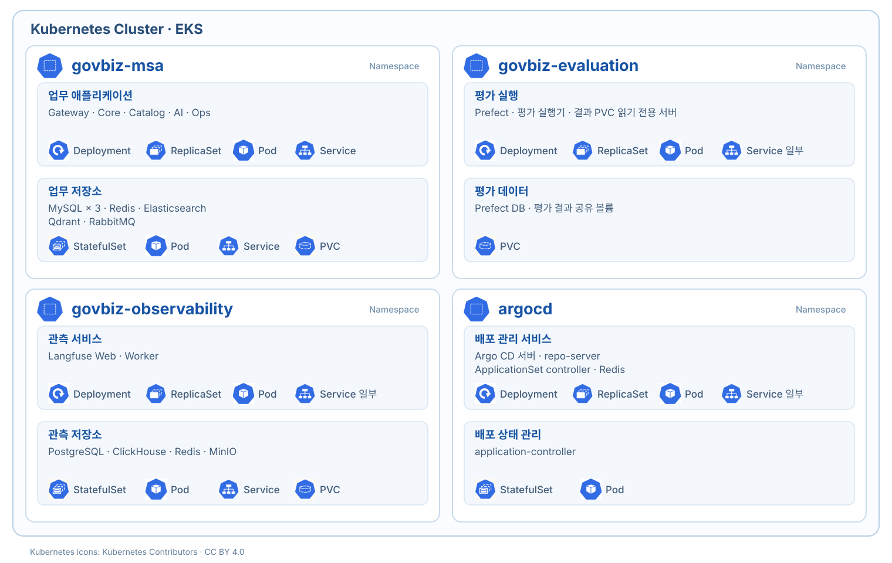
-
업무:
govbiz-msa에 Gateway·Core·Catalog·AI·Ops와 업무 저장소를 구성합니다. -
평가:
govbiz-evaluation에서 Prefect·평가 실행기·결과 조회 서버를 운영합니다. -
관측:
govbiz-observability에 Langfuse와 관측용 저장소를 구성해 AI 실행을 추적합니다. -
배포 관리:
argocd에서 Argo CD가 Git의 배포 설정을 클러스터에 반영하고 상태를 관리합니다. -
리소스 구성: Gateway와 업무·평가·관측 애플리케이션은
Deployment로 배포합니다.Deployment가 만든ReplicaSet이 지정된 수의Pod를 유지합니다.StatefulSet은 업무·관측 저장소의Pod를 관리하고, 데이터는PVC로 연결한 볼륨에 보관합니다. 네트워크 접속이 필요한 구성 요소는Service의 DNS 이름으로 연결합니다.
EBS 저장소 생성과 연결 순서
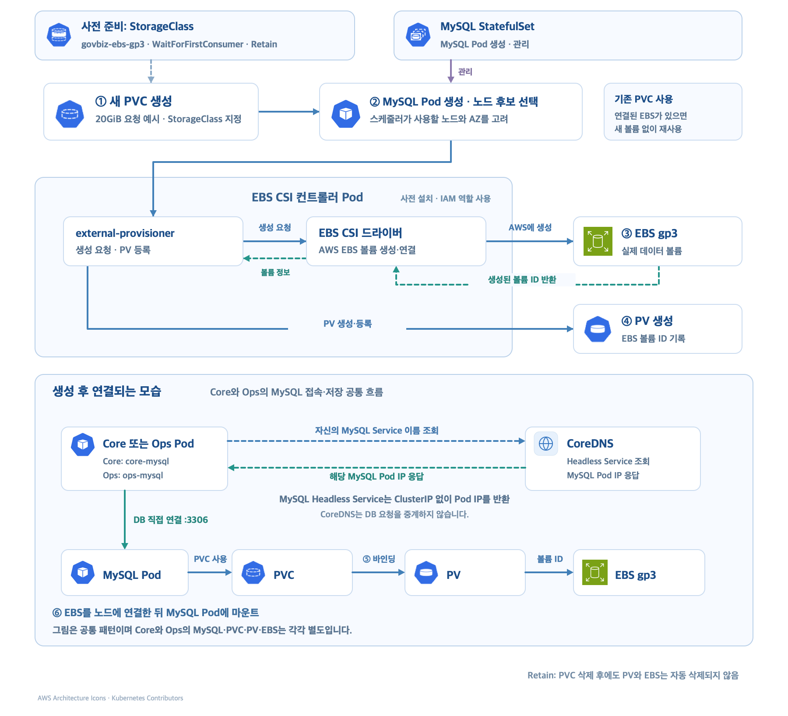
- 저장소 연결: MySQL Pod는 PVC를 사용하고, PVC는 PV를 통해 EBS 볼륨과 연결됩니다. MySQL은 연결된 볼륨을 마운트해 데이터를 저장합니다.
- 볼륨과 PV 생성:
WaitForFirstConsumer설정에 따라 PVC를 사용할 Pod가 생기면 스케줄러가 노드 후보를 선택합니다. CSI 컨트롤러의 external-provisioner가 EBS CSI 드라이버에 생성을 요청하고, 드라이버가 해당 가용 영역에 암호화된 gp3 EBS 볼륨을 만듭니다. external-provisioner가 이 볼륨 ID를 기록한 PV를 생성하면 Kubernetes가 PVC와 PV를 바인딩합니다. - 데이터 유지: MySQL Pod가 교체되어도 기존 PVC와 EBS 볼륨이 유지되고 볼륨을 다시 연결할 수 있다면 기존 데이터를 사용할 수 있습니다.
- Retain 정책: PVC를 삭제해도 PV와 EBS 볼륨이 자동으로 삭제되지 않도록 설정했습니다. 남은 볼륨을 다시 사용하려면 별도 복구 절차가 필요합니다.
- StatefulSet·PVC·EBS: MySQL 등 상태를 가진 저장소는 StatefulSet으로 Pod와 저장소 연결을 관리합니다. PVC는 저장 공간 요청이고 PV는 EBS 볼륨 ID 등 연결 정보를 담은 Kubernetes 객체입니다. EKS는 EBS CSI와
gp3StorageClass를 사용하며, 기존 PVC와 볼륨을 유지하면 Pod 교체 후에도 데이터를 다시 사용할 수 있습니다.Retain으로 남은 볼륨을 재사용하려면 별도 복구 절차가 필요합니다.
govbiz-msa — Ingress와 외부 요청 전달
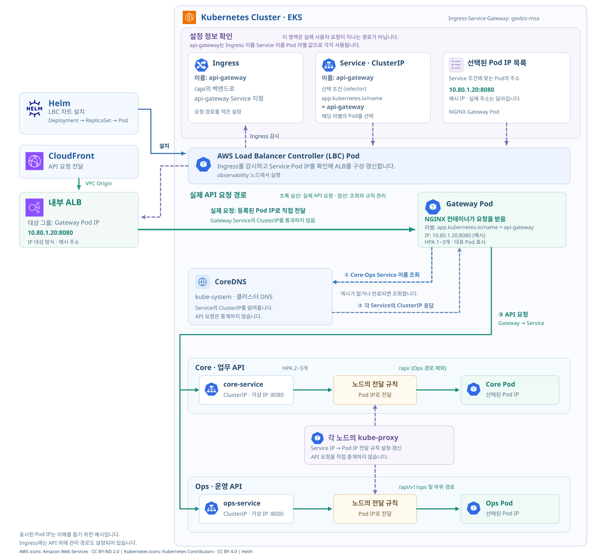
- Helm으로 LBC 설치 : Helm은 쿠버네티스 프로그램을 설치하는 도구입니다. 이 도구로 EKS 클러스터에 AWS Load Balancer Controller, 줄여서 LBC를 설치합니다. Amazon EKS
- Ingress 규칙:
govbiz-msa의api-gatewayIngress가/api·/argocd·/_langfuse경로의 백엔드로 Gateway Service를 지정합니다. 그림에는 API 요청 경로만 표시했습니다. - LBC가 내부 ALB 생성 : LBC가 Ingress 설정을 확인하고 AWS에 요청해 내부 ALB와 연결 대상을 만들고 관리합니다. Amazon EKS
- CloudFront 배포: 그림에는 API 요청을 처리하는 CloudFront만 표시했습니다. API와 Argo CD는 같은 CloudFront 배포를 사용합니다. Langfuse 관리 화면은 별도 CloudFront를 구성하며, 설정 시 두 배포가 같은 VPC Origin과 내부 ALB를 사용합니다.
- 실제 요청: CloudFront에서 내부 ALB로 요청이 들어오면, ALB는 IP 대상 방식으로 Gateway Service가 선택한 NGINX Gateway Pod에 직접 전달합니다.
- Gateway 분기:
/api/v1/ops와 그 하위 경로는 Ops로, 나머지/api/요청은 Core로 전달합니다. - Langfuse 내부 경로: 사용자가 접속하는 주소에는
/_langfuse를 붙이지 않습니다. CloudFront가 내부 ALB로 요청을 전달할 때만 이 경로를 추가하며, Argo CD와 Langfuse 관리 화면은 별도 인증·접속 설정이 필요합니다. - Pod 개수: HPA 설정 범위는 Gateway 1~3개, Core 2~3개입니다. 그림은 각 구성 요소의 대표 Pod를 한 개씩 표시합니다.
govbiz-msa — 업무 서비스와 데이터
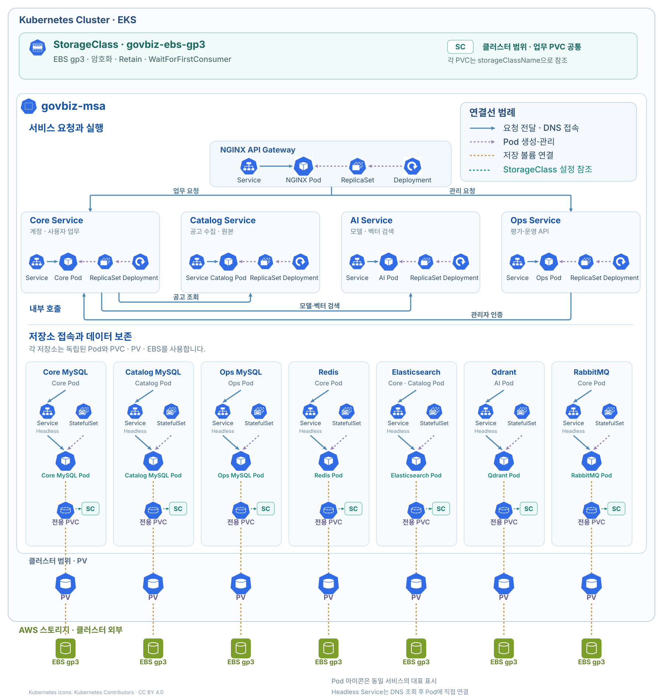
core-service·catalog-service·ai-service·ops-service는 Deployment가 ReplicaSet을 통해 Pod를 관리합니다. Ops API와ops-sync는 같은 Pod에서 실행됩니다.- EKS에서 Core와 AI는 각각 Pod 2~3개, Gateway는 1~3개로 구성합니다. Core·AI Pod는 두 노드에 분산하고, Catalog·Ops는 업무 DB와 같은 application 노드에 배치합니다.
- Core·Catalog·Ops MySQL, Redis, Qdrant, Elasticsearch, RabbitMQ는 각각 별도의 단일 Pod로 실행합니다. StatefulSet과 PVC를 사용하며, EKS 업무 저장소의 PVC는 총 7개입니다.
- 앱은 ClusterIP Service, 데이터 저장소는 Headless Service로 연결합니다.
govbiz-evaluation — 평가 실행과 결과 조회
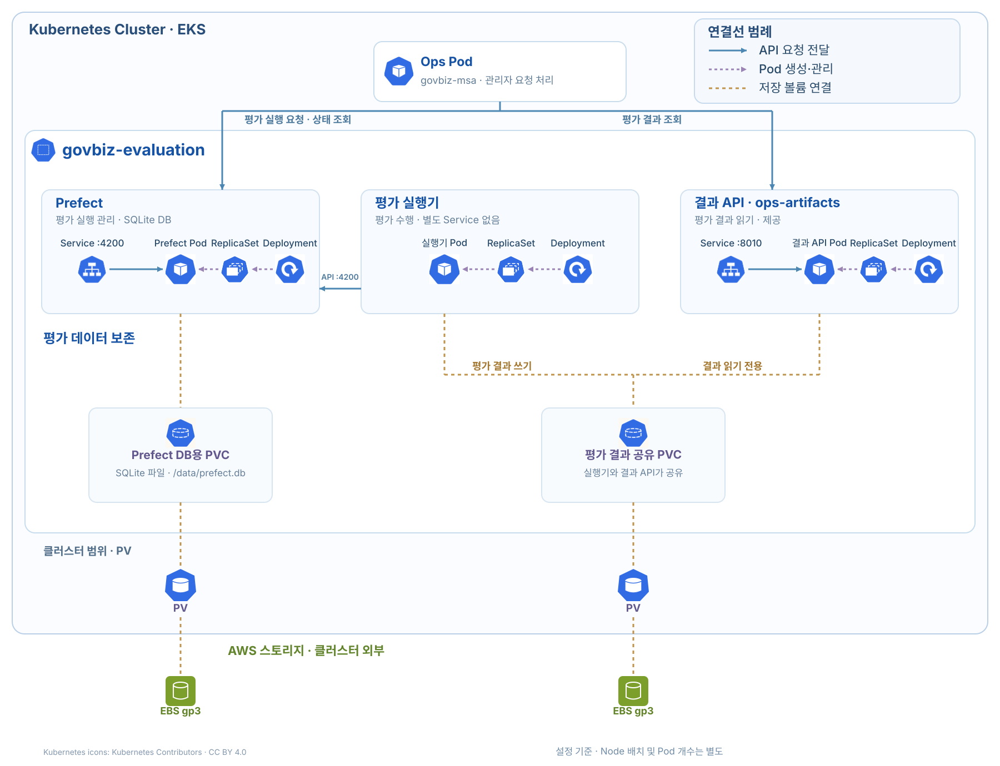
- Prefect,
evaluation-runner,ops-artifacts는 각각 Deployment로 실행합니다. Prefect는 4200번 포트, 결과 API는 8010번 포트를 사용하며 평가 실행기에는 별도의 Service가 없습니다. - EKS observability 노드에서 평가 실행기와 결과 API가 결과 PVC를 공유합니다. Prefect DB는 별도의 PVC를 사용합니다.
govbiz-observability — 관측과 추적
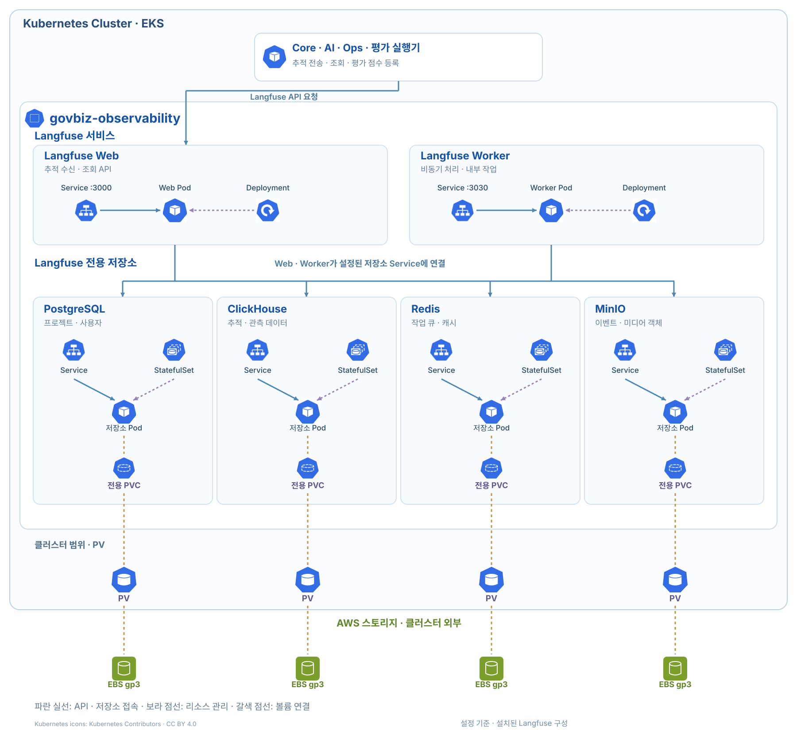
langfuse-web과langfuse-worker는 Deployment로 실행하고, PostgreSQL·ClickHouse·Redis·MinIO는 StatefulSet으로 관리합니다.- 앱과 관측 저장소는 각각 ClusterIP Service를 사용합니다. EKS observability 노드에 배치하며, 관측 저장소 4개는 업무용 MySQL·Redis와 분리하고 각각 독립된 PVC를 사용합니다.
argocd — 배포 관리와 대시보드
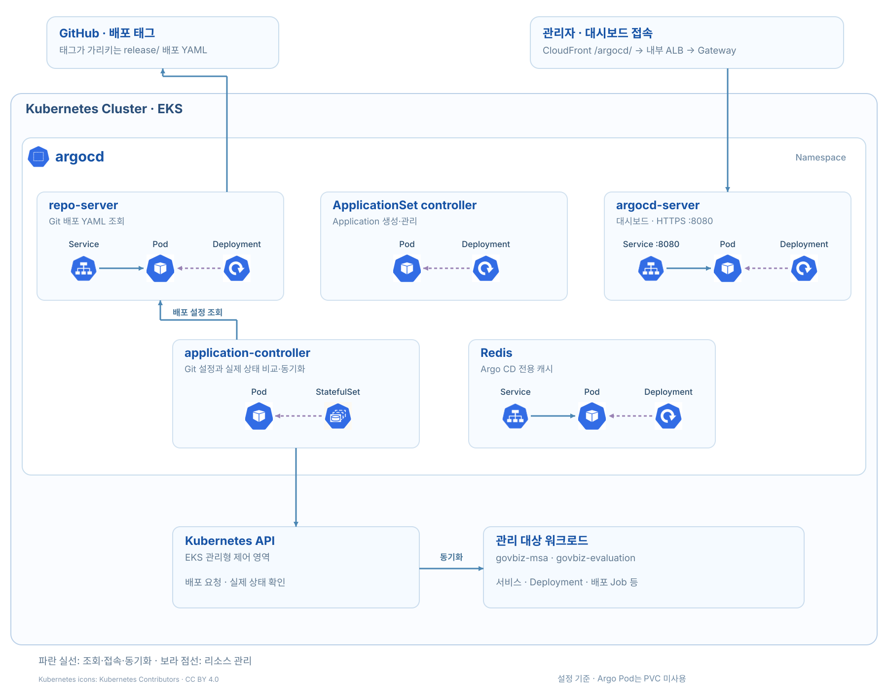
repo-server·applicationset-controller·Redis는 각각 별도의 Deployment와 Pod로 실행합니다.application-controller는 PVC가 없는 StatefulSet Pod 1개로 실행합니다.- EKS에는 Core 구성 요소 4개와 배포 관리 웹
argocd-server1개를 포함해 Pod 5개를 실행합니다. 로컬 kind에서는 Core 구성 요소 4개를 유지하며, 업무 React 웹은 Vercel에서 제공됩니다. argocd-server는 HTTPS 8080번 포트의 ClusterIP Service를 통해 준비된 대시보드 Pod로 연결합니다. 관리자는 CloudFront의/argocd/경로와 기존 ALB·Gateway를 거쳐 접속하며, 관리자 IP와 로그인을 제한합니다.repo-server와 Redis도 내부 Service를 사용하고 Argo Pod에는 PVC가 없습니다.- EKS에서는 observability 노드에 배치하며,
govbiz-eksApplication이 업무·평가 앱의 Deployment 6개를 관리합니다.
DB Pod 단일 구성의 한계와 개선 예시
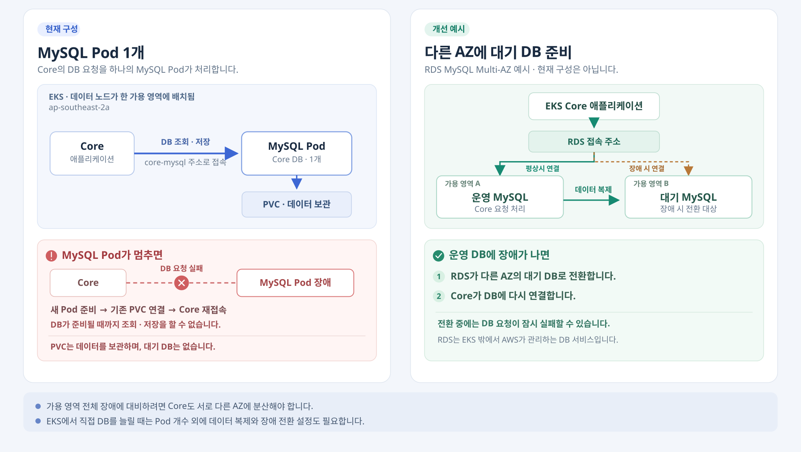
- 현재 구성: Core MySQL은 Pod 한 개로 실행됩니다. 이 Pod나 실행 중인 노드에 장애가 나면 DB가 복구될 때까지 Core의 DB 조회와 저장이 실패할 수 있습니다.
- 데이터 보관과 복구: MySQL 데이터는 PVC로 연결한 EBS 볼륨에 보관합니다. 대체 Pod에 기존 PVC를 다시 연결하면 데이터를 재사용할 수 있지만, PVC가 요청을 대신 처리하는 대기 DB는 아닙니다.
- 개선 예시: RDS for MySQL의 Multi-AZ를 사용하면 운영 DB와 대기 DB를 서로 다른 가용 영역에 두고 데이터를 복제합니다. 운영 DB 장애 시 RDS가 대기 DB로 자동 전환합니다. 이는 현재 적용된 구성이 아닌 개선 예시입니다.
- 전환 중 연결: 대기 DB로 전환하는 동안 DB 연결이 잠시 끊어질 수 있으므로 Core가 다시 연결해야 합니다.
- 함께 필요한 구성: 가용 영역 전체 장애에 대비하려면 Core 등 애플리케이션도 서로 다른 가용 영역에 배치해야 합니다. EKS에서 MySQL을 직접 이중화할 때는 데이터 복제와 장애 전환도 별도로 구성해야 합니다.
실제 Kubernetes 서비스·Pod 배치
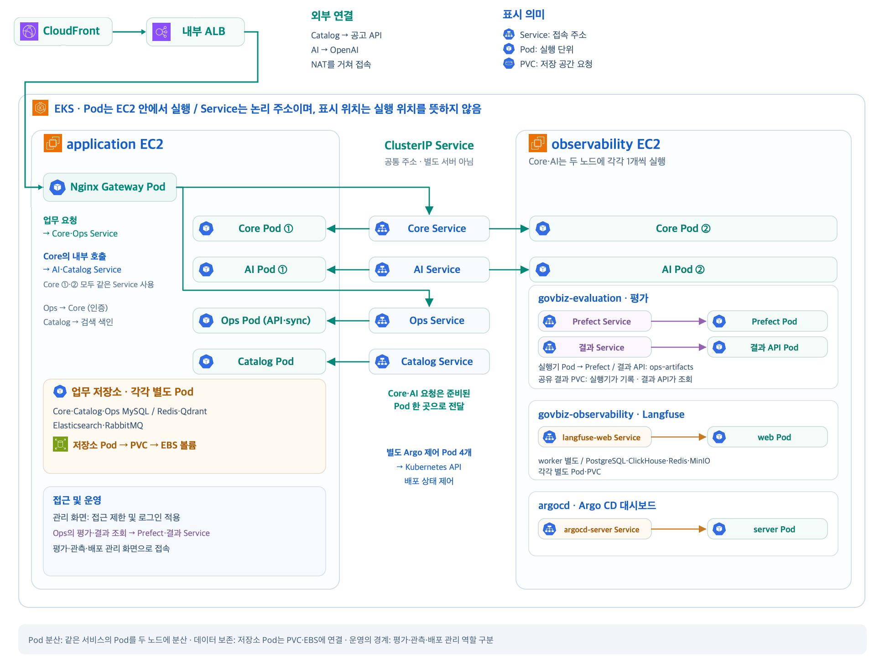
- 두 EC2에 나눈 배치: application EC2에는 Gateway·Catalog·Ops와 업무 저장소가, observability EC2에는 평가·관측·배포 구성 요소가 배치됩니다. Core와 AI는 각각 두 노드에 Pod를 하나씩 두고 같은 Service를 통해 요청을 받습니다.
- 서비스 간 호출: Core는 필요에 따라 AI·Catalog Service를 호출합니다. Ops는 관리자 인증을 위해 Core에 요청하고, 평가 실행과 결과 확인을 위해 Prefect와 결과 Service를 이용합니다.
- 저장소와 데이터 유지: 업무 DB와 Redis·Qdrant·Elasticsearch·RabbitMQ는 애플리케이션과 별도의 Pod로 실행됩니다. 저장이 필요한 구성 요소는 PVC를 통해 EBS 볼륨을 연결해, Pod가 교체되어도 기존 볼륨을 다시 사용할 수 있도록 합니다.
- 평가·관측·배포와 외부 연결: Prefect는 평가 실행을 관리하고 결과 API는 공유 저장소의 결과를 제공합니다. Langfuse는 AI 호출을 추적하고 Argo CD는 배포를 관리합니다.
노드별 Pod 배치와 자동 확장
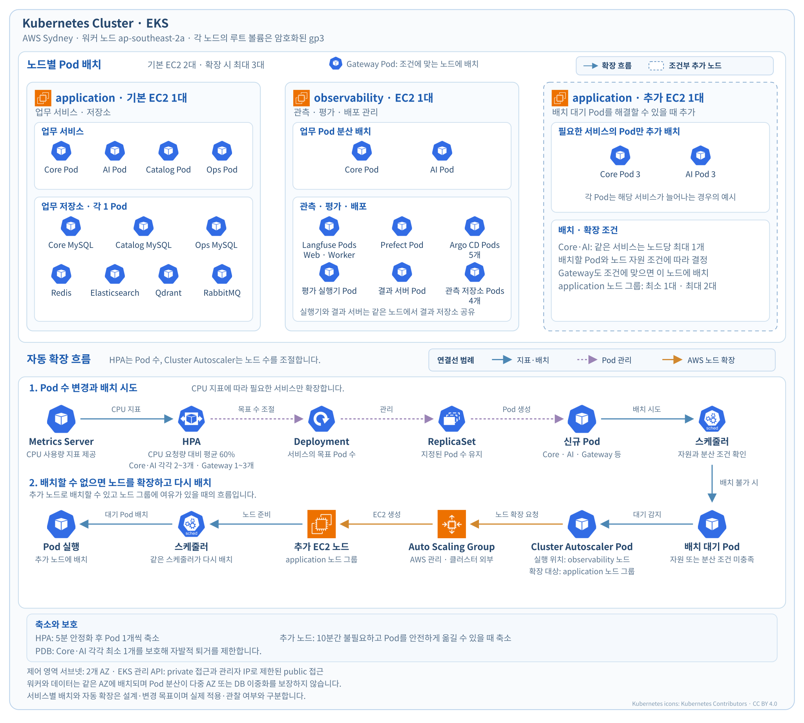
- HPA — Pod 개수 조절: Metrics Server가 각 노드의 kubelet에서 컨테이너 CPU 사용량을 수집합니다. HPA는 Kubernetes API로 이 사용량을 조회해 컨테이너에 설정된 CPU 요청량과 비교하고, 평균 사용률이 60%에 가깝도록 Pod 수를 조절합니다. Core와 AI는 각각 2~3개, Gateway는 1~3개 범위에서 조절합니다. 부하가 줄어들 때는 최근 5분 동안 필요하다고 계산한 Pod 수 중 가장 큰 값을 기준으로 축소해, 일시적인 사용량 감소에 따라 Pod 수가 자주 바뀌는 현상을 줄입니다.
- Cluster Autoscaler — Node 개수 조절: kube-system 네임스페이스에 속하고, 늘어난 Pod가 자원이나 분산 조건 때문에 배치되지 못하면 application Node를 1대에서 최대 2대로 늘립니다. observability Node 1대를 합쳐 EC2는 기본 2대·최대 3대입니다. 추가 Node가 10분간 불필요하고 남은 Pod를 안전하게 옮길 수 있을 때 축소합니다.
- Gateway: 복제된 Gateway Pod가 한 노드에 몰리지 않도록 분산합니다. 두 노드가 모두 배치 가능한 상태라면, Gateway 2개를 한 노드에 몰아서 2개 대 0개로 배치하는 것을 제한합니다. 노드 하나에 문제가 생겼을 때 다른 노드에도 Gateway가 남을 수 있도록 하기 위한 설정입니다.
- Catalog 또는 Ops가 DB와 같은 노드에 배치하는 규칙이 없다면, 추가 노드가 생긴 이후 배포로 교체된 Catalog 또는 Ops Pod가 추가 노드에 배치될 수 있습니다. 각 서비스는 하나만 실행되고 PDB로 보호받기 때문에, 그 노드를 나중에 회수하기 어려울 수 있습니다.
노드·확장 설정 펼쳐 보기
| 구성 요소 | 세부 설정·역할 |
|---|---|
| application · EC2 1대 | 업무·저장소 노드 · Core Pod 1 · AI Pod 1 · Catalog · Ops(API + sync) · Core / Catalog / Ops MySQL · Redis · Elasticsearch · Qdrant · RabbitMQ |
| observability · EC2 1대 | 관측·평가·Argo + 분산 Pod · Core Pod 2 · AI Pod 2 · Langfuse Web·Worker·저장소 · Argo CD Pod 5개 · Prefect · 평가 실행기 · 결과 서버 |
| HPA → Pod 개수 조절 | CPU requests 대비 평균 60% · Core·AI: 2~3개 / Gateway: 1~3개 |
| 배치 대기 Pod | 자원이 부족하거나 분산 조건을 만족하지 못함 |
| application · EC2 1대 추가 | Core Pod 3 · AI Pod 3 배치 · 같은 서비스는 EC2당 최대 1개 · 자원·배치 조건에 맞춰 스케줄 · 전체 EC2: 기본 2대 · 최대 3대 |
| 안전하게 줄이는 조건 | HPA: 5분 안정화 · 추가 노드: 10분 불필요 + 안전한 이동 조건 · PDB: 자발적 중단 제한 |
노드별 Pod 분산과 배포 방식
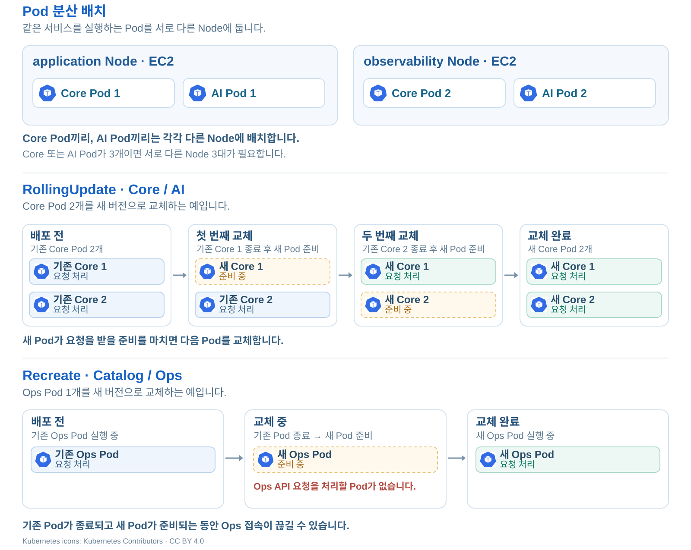
- 분산과 배포 방식: Core·AI는 같은 서비스의 Pod가 한 Node에 함께 배치되지 않도록 하며, RollingUpdate로 기존 Pod를 최대 1개씩 교체합니다. Catalog·Ops 등 단일 실행 서비스는 Recreate 방식이므로 교체 중 잠시 접속이 끊길 수 있습니다.
PDB — 노드 축소 시 Pod 퇴거 보호
- PDB — 자발적 퇴거 보호: Core·AI는 각각 최소 1개가 사용 가능하도록 설정해 노드 축소 같은 자발적 퇴거를 제한합니다. PDB가 갑작스러운 노드 장애를 막거나 DB 고가용성을 보장하는 것은 아닙니다.
구현 근거: 메인 README의 운영 구성 · Kubernetes 리소스 설명 · 자동 확장 설정
클러스터 관리·요청 경로·자동 확장
3.5. AWS EKS 클러스터 생성과 노드·네트워크·AWS 권한 구성
EKS 클러스터 생성
- 클러스터 생성: eksctl 설정 파일에 클러스터와 노드 그룹·네트워크를 정의합니다. eksctl이 이 설정을 바탕으로 CloudFormation 스택을 생성하고, CloudFormation이 EKS 클러스터와 관련 AWS 리소스를 구성합니다.
EKS 컨트롤러의 AWS 권한 연결
- AWS 권한 연결: EBS CSI와 AWS Load Balancer Controller(LBC)가 사용하는 Kubernetes ServiceAccount를 Pod Identity로 각각의 IAM 역할과 연결합니다. 각 컨트롤러는 연결된 역할에 허용된 AWS 작업을 수행합니다.
- 실제 API 요청: CloudFront에서 VPC Origin을 거쳐 내부 ALB로 전달된 요청은 Gateway Pod로 향합니다. Gateway는 요청 경로에 따라 Core·Ops 등의 서비스로 전달합니다.
- 구성 간 관계: EBS 저장소와 API 진입 경로는 각각 별도로 구성합니다. 두 구성은 공통으로 EKS 클러스터를 사용하며, 각 컨트롤러에 연결된 IAM 역할을 통해 필요한 AWS 작업을 수행합니다.
EKS 클러스터·노드·네트워크 구성
- 클러스터와 VPC: eksctl 설정으로 시드니 리전의 EKS 클러스터와 VPC 네트워크를 구성했습니다. AWS가 관리하는 EKS 컨트롤 플레인은 Kubernetes API와 클러스터 관리를 담당하고, 실제 서비스는 별도 EC2 노드에서 실행됩니다.
- 노드 그룹 분리: EKS 관리형 EC2 노드를 application과 observability 두 그룹으로 나눴습니다. 노드에 역할별 라벨을 부여해 업무와 관측 워크로드를 구분할 수 있게 했으며, 각 노드는 프라이빗 네트워크에 배치하고 암호화된 gp3 볼륨을 사용하도록 설정했습니다.
- ENI와 Pod IP: ENI는 EC2 노드를 VPC 네트워크에 연결하는 가상의 네트워크 카드입니다. 한 ENI에 여러 사설 IP를 연결할 수 있고, 이 중 추가 IP를 일반 Pod에 할당할 수 있습니다.
-
VPC CNI와 네트워크 연결: 각 노드에서 동작하는 VPC CNI(
aws-node)는 Pod에 사용할 IP를 준비해 할당하고, Pod와 노드의 네트워크가 이어지도록 연결과 통신 경로를 설정합니다. - 노드의 외부 통신: 프라이빗 노드는 외부에 직접 노출하지 않고 NAT Gateway를 통해 필요한 외부 서비스에 접근합니다. 이는 이미지 다운로드 등 노드에서 외부로 나가는 통신을 위한 경로입니다.
- 클러스터 관리 접근: EKS Kubernetes API에는 프라이빗 접근을 설정하고, 퍼블릭 접근은 허용된 관리자 IP로 제한했습니다. 이는 사용자 API의 공개 경로가 아니라 클러스터를 관리하기 위한 접근 경로입니다.
가용 영역 단일 배치와 장애 영향
- 장애 가정: 2a 전체 장애를 가정하면 application과 observability 노드의 Pod가 함께 영향을 받을 수 있습니다. 최초 배포 설정에는 2c 대기 노드가 없습니다.
- 데이터 전환: EBS 볼륨은 같은 AZ의 EC2에만 직접 연결할 수 있습니다. 2c에서 데이터를 사용하려면 복제나 백업 복원 등 별도 구성이 필요합니다.
- 구성 범위: 최초 배포 기록에서는 두 노드 그룹의 워크로드가 같은 가용 영역에 배치되어 있습니다. 따라서 이 구성만으로 워크로드와 데이터의 다중 가용 영역 고가용성이 확보되었다고 보기는 어렵습니다.
3.6. GitHub Actions·Helm·Argo CD를 활용한 CI/CD 및 GitOps 배포 자동화 구축.
CI 검증과 배포 설정 발행
- 이미지 빌드·저장: CodeBuild가 ECR에서 검증된 커밋의 Core·Catalog·AI·Ops·평가 실행기 이미지 태그를 각각 조회합니다. 없는 이미지만 빌드해 ECR에 푸시한 뒤 digest를 조회합니다. 각 이미지의 저장소 주소와 digest는 CodeBuild의 임시 파일
release.json에 기록합니다.
배포 YAML 생성: CodeBuild에서 실행되는 배포 스크립트가 Chart와 프로젝트 설정, 이미지 정보를 준비해 Kubernetes 배포 YAML을 만듭니다.
-
Chart :
govbiz-serviceChart에는 Deployment·Service 등을 만드는 양식과 기본값이 들어 있습니다. Core·Catalog·AI·Ops에 같은 Chart를 사용하고, 서비스별 설정을 다르게 넣습니다. -
EKS 설정 : 스크립트가 작성해 둔
infrastructure/eks/gitops-values.yaml과 서비스별 설정을 읽습니다. 예를 들어 Core의 Pod 자동 확장 범위와 CPU·메모리 요청량을 정합니다. -
이미지 digest : 앞 단계에서 만든
release.json에서 각 서비스의 ECR 이미지 주소와 digest를 읽습니다. 이렇게 해야 배포 YAML이 실행할 이미지의 정확한 버전을 가리킵니다. -
설정값 전달: 스크립트가 서비스별 설정과 이미지 정보를 합쳐 임시
values.yaml을 만들고,helm template의-f옵션으로 전달합니다. Helm은 Chart의 양식에 이 값을 채워Deployment·Service 등의 YAML을 생성합니다. - 생성 후 처리: 배포 스크립트가 노드 배치 조건과 소스 커밋 정보, 필요한 배포 hook 등을 보완합니다. 이 단계에서는 YAML을 생성·준비하며, EKS 반영은 이후 Argo CD가 수행합니다.
- Git 배포 태그 발행: Git 발행 직전 ECR의 digest를 다시 확인합니다. 배포 YAML을
release/경로로 포함하는 Git 커밋을 만들고, 해당 커밋을 가리키는 불변 태그를 GitHub에 푸시합니다. - Argo CD 동기화: Argo CD가 Git 태그를 주기적으로 확인하고 가장 최신 버전의 배포 태그를 선택합니다. Kubernetes API로 동기화합니다.
빌드·발행 설정 펼쳐 보기
| 구성 요소 | 세부 설정·역할 |
|---|---|
| GitHub Actions | 개인 main · 필수 CI 5개 · 같은 최신 SHA 통과 확인 · 배포 순서·조건 조율 |
| AWS CodeBuild | 서비스 이미지 5개 빌드 · Helm·배포 스크립트 실행 |
| 이미지 경로 | 실행할 프로그램 |
| Amazon ECR · private | Core · Catalog · AI · Ops · evaluation-runner · immutable git-SHA 태그 · digest로 실행 버전 고정 · Ops 이미지는 결과 서버에도 재사용 |
| Helm · YAML 생성 | Chart + EKS 설정 · 이미지 digest를 명세에 고정 · Kubernetes 배포 파일 생성 |
| EKS 노드 | ECR → 지정한 digest의 · 실행 이미지 pull |
| 배포 스크립트 | release/에 YAML 저장 · Git 커밋 생성 · immutable release 태그 발행 |
| 실제 실행 대상 | 이미지 5개를 사용해 · 업무·평가 Deployment 6개 실행 |
| Git 태그 → Argo CD | 규칙에 맞는 최신 태그 감지 · 태그 커밋의 release/ YAML 조회 · Kubernetes API로 설정 반영 |
Git 태그 발행부터 EKS 반영까지 (전체 흐름)
- Argo CD 동기화: Argo CD가 Git 태그를 주기적으로 확인하고 설정된 버전 범위에 맞는 가장 높은 버전의 배포 태그를 선택합니다. 해당 태그가 가리키는 커밋의 release/ YAML과 클러스터 상태를 비교해 Kubernetes API로 동기화합니다.
-
② Application 설정 확인: application-controller는
govbiz-eks Application의 Git 저장소(repoURL), 태그 접두사(tagPrefix)와 버전 범위(targetRevision), 경로(path), 배포 대상(destination), 동기화 정책(syncPolicy)을 기준으로 삼습니다. repo-server는 이 기준에 맞는 Git의 원하는 리소스 설정을 생성해 controller에 전달합니다. -
④ 차이 비교와 동기화 판단: controller는 repo-server가 제공한 원하는 리소스 상태와 EKS의 현재 상태를 비교합니다. 차이가 있으면 ②에서 확인한 같은 Application의
syncPolicy와 동기화 조건을 기준으로 자동 실행 여부를 판단합니다. -
동작 예시: Git의 새 Core 이미지 digest와 EKS의 현재 Core 설정이 다르고 새 리비전이 자동 동기화 조건을 충족하면 PreSync부터 실행합니다. 자동 동기화는 켜져 있지만
selfHeal: false이므로, 이미 성공한 같은 리비전에서 EKS만 수동 변경한 경우에는 그 차이만으로 자동 복구하지 않습니다.
Argo 설정 펼쳐 보기
| 구성 요소 | 세부 설정·역할 |
|---|---|
| repo-server | Git 태그의 release/ YAML 조회 · 리소스 내용을 controller에 제공 |
| application-controller | Git 설정과 클러스터 상태 비교 · Kubernetes API로 앱 동기화 |
| Kubernetes API | Argo 권한 확인 · 원하는 상태 반영 · EC2에 배치된 업무 Pod가 아님 |
| govbiz-eks Application | 동기화 대상 Deployment 6개 · Core · Catalog · AI · Ops · 평가 실행기 · 결과 서버 · Service · 배포 hook 등 반영 · PreSync prepare / PostSync resume Jobs |
| ApplicationSet controller | Application 생성·관리 |
| Redis · Argo 내부 캐시 | 업무·Langfuse Redis와 별도 |
| argocd-server · 상시 배포 관리 웹 | Gateway → HTTPS ClusterIP :8080 · → Deployment / ReplicaSet → Pod 1개 |
Argo CD 동기화 작업 (동기화 단계 상세)
- 동기화 시작 조건: application-controller가 Git의
release/에서 구성한 원하는 설정과 EKS의 현재 상태를 비교합니다. 차이가 있고 Application의 자동 동기화 조건이 충족되면 동기화 작업을 시작합니다. - PreSync — 배포 전 준비:
prepareJob이 신규 평가 접수를 일시 중지하고 대기·실행 중인 평가를 확인합니다. 평가가 남아 있으면 Job이 실패해 앱 갱신이 중단되며, 신규 접수도 중지된 상태를 유지합니다. 평가가 끝난 뒤 재시도할 수 있고, 남은 평가가 없으면 Ops DB 마이그레이션을 실행합니다. - Sync — 설정 반영: Argo CD가 Kubernetes API에 Deployment와 Service 설정을 적용합니다. Kubernetes는 새 설정에 맞춰 Pod를 갱신하며, EKS 노드는 필요한 이미지를 ECR에서 가져오거나 캐시된 이미지를 사용합니다.
- PostSync — 적용 후 점검: 관리 리소스가 Healthy가 되면
resumeJob이 평가 자료·Prefect·결과 서버의 연결을 확인합니다. 점검에 성공하면 이번 배포로 중지한 평가 접수를 이전 상태로 복구하며, 원래 중지된 상태였다면 그대로 유지합니다. - 진행과 성공 확인: CodeBuild가 동기화 상태와 hook 결과를 계속 조회합니다. PreSync·Sync·PostSync가 모두 성공해야 동기화 작업이 완료되며, 다음 이미지에서 CodeBuild의 배포 검증과 웹 전환 과정을 확인할 수 있습니다.
동기화 성공 확인과 웹 전환 (배포 결과 검증)
- 동기화 중 상태 조회: GitHub Actions의 backend Job은 CodeBuild 환경에서
gitops.py wait를 실행합니다. 이 스크립트는kubectl을 통해 Kubernetes API에서 Argo CD Application과 6개 Deployment의 상태를 조회합니다. - 동기화와 Hook 확인: Application의 리비전이 배포 기록과 일치하고
Synced·Healthy이며 동기화 작업이 성공했는지 확인합니다. 이어서 Application의 동기화 결과에 기록된prepare와resumeHook의hookPhase가 모두Succeeded인지 확인합니다. Hook 성공 여부는 Job 로그 대신 Application 상태에서 확인합니다. - Deployment 확인: 각 Deployment의 준비 상태를 확인하고, Pod 템플릿에 지정된 소스 SHA와 이미지 digest를 배포 기록과 비교합니다. 실행 중인 각 컨테이너의
imageID를 직접 확인하는 방식은 아닙니다. - 재조회와 실패: 성공 조건이 충족되지 않으면 15초를 기다린 뒤 다시 조회합니다. 해당 리비전의 동기화 작업이
Failed나Error이거나 대기 제한인 기본 20분을 넘으면 검증이 실패해 웹 단계가 시작되지 않습니다. - 웹 배포 준비: backend Job이 성공하면 web Job이 같은 소스 커밋의 웹·shared 코드를 빌드하고
--skip-domain으로 Vercel 배포를 생성합니다. 새 배포의 고유 URL은 만들어지지만 운영 도메인은 아직 기존 배포를 가리킵니다. - 운영 주소 전환: web Job은 Vercel 프로젝트·소스 SHA·
READY상태와 필수 CI·최신main을 확인한 뒤 운영 주소 전환을 요청하고 완료 여부를 확인합니다. 요청 전 검증에 실패하거나 시간이 초과되면 전환 요청은 보내지 않습니다.
같은 소스 커밋과 실패 시 동작
참고 이미지
- 배포 확인과 웹 전환: CodeBuild가 GitOps 리비전과 배포 hook, Deployment에 지정된 이미지 digest, 앱 준비 상태를 확인합니다. EKS 검증이 성공하면 GitHub Actions가 같은 Git 소스 커밋의 웹·shared 코드를 빌드하고, 필수 CI와 최신 main을 다시 확인한 뒤 Vercel 운영 주소로 전환합니다.
향후 개선 과제 — 배포 단위 분리
- 현재 구조: 평가용 PreSync가 전체 동기화에 적용돼 평가 중 Core 배포가 지연될 수 있고, 공통 소스 SHA 변경으로 다른 서비스의 Pod도 갱신될 수 있습니다.
- 향후 개선 제안: 서비스별 Application과 배포 리비전을 분리하고 평가용 Hook은 Ops·평가 영역에 유지합니다. SHA 이력, CodeBuild·웹 검증, API·DB 호환성과 접수 복구 절차도 함께 조정해야 합니다. 아직 적용된 구성이 아닙니다.
구현 근거: EKS 클러스터·노드 설정 · EKS 배포 스크립트 · EKS 설정값 · Helm Chart
3.7. Core·Catalog·AI·Ops로 책임을 분리한 마이크로서비스 아키텍처 설계.
서비스 책임과 데이터 소유권을 함께 분리
- Core: 계정·관심 공고·신청 준비 등 사용자 업무와 공개 API를 담당합니다. Core MySQL에 사용자 업무와 공고 조회용 복제본을 저장하고, Elasticsearch에서 키워드 후보를 조회합니다. Redis는 캐시·임시 상태에, RabbitMQ는 Core 내부 비동기 작업에 사용합니다.
- Catalog: 제공처 공고를 수집·정규화하고 Catalog MySQL에 원본과 수집·게시 상태를 관리합니다. Elasticsearch 키워드 색인을 만들고 AI 서비스에 벡터 준비를 요청하며, 검색 자료가 준비된 공고 snapshot을 내부 API로 제공합니다.
- AI: 임베딩·모델 추론·벡터 검색 실행을 담당합니다. Qdrant에 공고 검색 벡터와 답변 근거 청크를 저장하고 OpenAI API를 활용해 검색·생성 기능을 제공합니다.
- Ops: 평가 실행·사람 검토·예산·일정과 이력을 관리하고 Ops MySQL에 저장합니다.
Catalog와 Core 분리의 이점과 한계
- 서비스 분리: 두 기능을 하나의 프로세스에서 실행한다면 공고 처리 중 메모리 부족으로 서비스 프로세스가 종료되면, 그 프로세스가 담당하던 사용자 API도 함께 중단될 수도 있습니다. 사용자 요청이 늘어날 때 Core의 Pod 수를 Catalog와 별도로 관리 할 수 있습니다.
- DB 분리: Catalog는 공고 원본을, Core는 사용자 업무 데이터와 공고 조회용 복제본을 각각의 DB에서 관리합니다. Catalog MySQL 프로세스가 메모리 부족과 같은 DB에 장애가 발생하더라도 Core와 Core DB 등 필요한 구성 요소가 정상이라면, Core는 이전에 동기화한 공고로 목록 조회와 관심 저장 등의 업무를 처리할 수 있습니다.
- 한계: 독립적인 확장과 DB 장애 영향 축소를 위해 서비스와 DB를 분리했지만, 그 대가로 동기화와 운영이 복잡해졌습니다. 이러한 이점의 필요가 크지 않은 규모라면 사용자 업무와 공고 수집을 하나의 서비스와 하나의 DB로 운영하는 더 단순한 구조도 타당합니다. ( 현재 프로젝트의 규모와 운영 여건을 고려하면, MSA로 안나누고 하나의 Service로 관리하는게 더 좋은 운영 구조라고 보입니다. )
Core와 AI 분리의 이점과 한계
- 서비스 분리: 서로 다른 실행 환경과 라이브러리, 자원을 각각 관리할 수 있습니다. AI Pod의 평균 CPU 사용률이 높아지면 Core Pod 수와 별도로 AI Pod를 늘릴 수 있습니다.
- 한계: Core의 AI 기능은 내부 HTTP로 AI 서비스를 호출하므로 AI 장애나 응답 지연의 영향을 받습니다. ( 현재 프로젝트에서 AI 기능이 Python 라이브러리 실행 환경에 종속되어 있으며 각각 서로 다른 환경을 관리하고 실행 규모를 따로 조절하기 위해 분리해서 관리해야 합니다. )
Core와 Ops 분리의 이점과 한계
- 서비스 분리: Core는 사용자 업무를, Ops는 평가 요청·이력·검토를 담당합니다. Spring Boot·Kotlin과 Django·Python의 실행 환경과 배포를 각각 관리할 수 있습니다.
- 한계: Ops는 관리자 권한을 Core에 확인하므로 Core가 지연되거나 중단되면 권한 확인이 필요한 Ops 기능도 영향을 받습니다. ( 현재 프로젝트 규모와 운영 여건을 고려하면 한 서비스로 관리하는 편이 더 좋지만, 당시 Django를 사용해야 하는 프로젝트 조건에 맞추기 위해 Ops를 분리해 개발했습니다. )
3.8. React 웹과 React Native 앱이 도메인·API 클라이언트·응답 검증을 공유하고, 플랫폼별 인증·전송 처리는 분리 설계.
업무 규칙과 응답 검증은 공유, 플랫폼 연결은 분리
- 공통으로 사용하는 부분: 웹과 앱은
@govbiz/shared에 있는 도메인 규칙·유스케이스·공고 API 클라이언트·응답 검증 코드를 함께 사용합니다. 공통 패키지는 각 앱에 포함되는 코드이며, 별도의 서버가 아니고 React에도 의존하지 않습니다. - 웹에서 담당하는 부분: React 웹은 브라우저 화면과 상태, 쿠키 세션을 관리합니다. 공통 API 클라이언트에는 웹에서 사용하는
coreFetch를 전달합니다. 공고 검색과 검색 복원에서는credentials: include로 쿠키를 함께 보냅니다. - 앱에서 담당하는 부분: React Native 앱은 네이티브 화면·화면 이동·세션 저장을 담당합니다. 앱용
fetch로 Bearer 인증을 처리하며, 공고 검색과 검색 복원에는credentials: omit을 사용합니다. - 플랫폼 연결을 분리한 이유: 웹과 앱은 공통 클라이언트에 각자의 API 주소와 요청 방식을 전달합니다. 공고를 다루는 공통 코드를 재사용하면서도 쿠키와 Bearer 인증처럼 플랫폼마다 다른 전송 방식을 적용할 수 있습니다.
- 응답 검증: 공통 코드가 서버 응답을 Zod로 검사하고 필요한 형태로 변환합니다. 예를 들어 근거 답변의 상태·내용과 인용 URL이 정해진 형식에 맞는지 확인합니다.
- 공유 범위: pnpm workspace와 하나의 lockfile을 사용하지만 모든 화면이나 API를 공유하는 것은 아닙니다. 화면·내비게이션·저장 방식은 각 플랫폼에서 관리합니다.
실제 화면: 같은 근거 답변 기능을 웹과 앱에서 제공
근거 답변의 구조·상태·공식 인용 URL을 공통 경계에서 검사합니다. GovAgent 응답에서는 사용자가 선택한 공고 ID도 대조합니다. 모든 API와 UI가 공유된 것은 아니며, 기기·스토어 배포 검증은 공통 코드·JS 번들 검증과 구분합니다.
구현 근거: 공유 구조 · 공통 API 클라이언트 · 근거 답변 검증 · GovAgent 응답 검증
4. 트러블 이슈
4.1 평가 결과 조회를 위한 별도 서버 운영의 복잡성
문제 상황
평가 실행기는 비교 결과와 HTML 보고서 등의 파일을 결과 PVC에 저장합니다. Ops API와 ops-sync는 이 파일을 조회하기 위해 별도 Pod인 ops-artifacts에 HTTP 요청을 보냅니다. 이 서버는 결과 PVC를 읽기 전용으로 연결해 파일을 반환합니다.
현재 경로는 평가 실행기 → 결과 PVC → ops-artifacts → Ops API·ops-sync입니다. 결과 조회를 위해 별도 Pod, 내부 Service, 인증 토큰과 네트워크 연결을 관리해야 하며, 결과 서버에 문제가 생기면 파일 조회에도 영향을 줄 수 있습니다. 이는 실제 장애 발생 기록이 아닌 구조적 복잡성에 대한 검토입니다.
배경과 현재 제약
- 현재 설정에서 Ops는
govbiz-msa, 결과 PVC와 실행기·결과 서버는govbiz-evaluation에 있습니다. Pod는 다른 네임스페이스의 PVC를 직접 참조할 수 없습니다. - EKS 배포 설정은 Ops를
application, 실행기와 결과 서버를observability노드 그룹에 배치합니다. 결과 PVC의ReadWriteOnce방식에서는 같은 노드의 여러 Pod가 볼륨을 사용할 수 있으며, 현재 실행기와 결과 서버가 이를 공유합니다. - Ops 코드에는 결과 서버의 HTTP 조회와 파일 경로 직접 읽기 분기가 모두 있습니다. 다만 직접 읽기를 사용하려면 결과 PVC와 평가 입력 자료를 Ops API·ops-sync가 실제로 읽을 수 있게 연결해야 합니다.
개선 방안 비교
| 방안 | 구성 | 확인할 점 |
|---|---|---|
| 결과 PVC 직접 연결 | Ops와 실행기가 같은 네임스페이스와 노드에서 PVC를 공유하고, Ops는 읽기 전용으로 접근합니다. | 배치가 같은 노드에 묶입니다. 네임스페이스·서비스 연결 변경과 기존 데이터 보존이 필요합니다. |
| S3에 결과 보관 | 실행기가 결과 파일을 S3에 올리고 Ops가 직접 조회합니다. | 업로드·조회 코드와 IAM 권한, 비용을 검토해야 합니다. 기존 S3의 이전 백업과는 별도 사용 경로입니다. |
| Ops API로 결과 전달 | 실행기가 결과를 기존 Ops API에 전송하고 Ops가 저장·조회합니다. | 업로드 API, 저장소, 인증, 실패 시 재시도와 파일 무결성 검증이 필요합니다. |
현재 파일 직접 읽기 코드가 있어 PVC 직접 연결을 우선 검토할 수 있습니다. 다만 같은 노드에 배치해야 하는 제약을 S3 방식과 비교해 결정합니다.
구현 근거: 결과 조회 코드 · 기존 환경 연결 배경 · EKS 배치 설정 · Kubernetes PVC
5. 기술 보고서 PDF
표지·목차와 사용자·관리자 소개, 원본의 구성을 재배치한 상세 아키텍처 7장, 기술별 구현 설명을 담은 24페이지 PDF입니다. 5~11페이지에서 접속·서비스·평가·노드·외부 통신·빌드·배포 구조를 차례로 볼 수 있습니다.